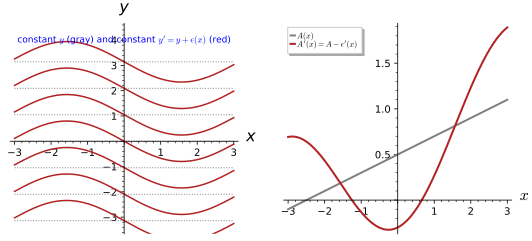
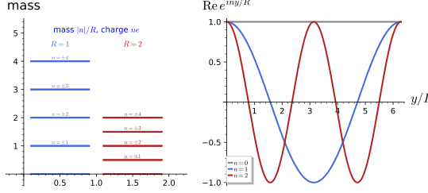
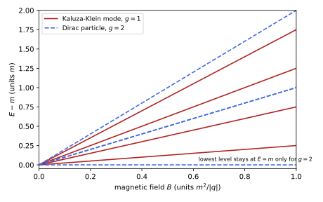
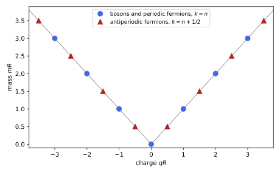
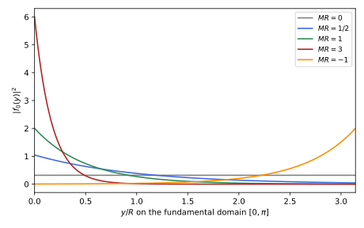
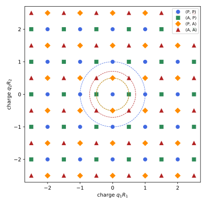

Gauge symmetry and the Kaluza-Klein tower
The reduction of the previous chapter produced a vector field A_\mu whose action is Maxwell’s. For it to be the electromagnetic potential it must also have Maxwell’s symmetry, the abelian gauge invariance A_\mu \to A_\mu - \partial_\mu\epsilon of Gauge theories, and charged matter must couple to it with quantised charges. Both properties come from the circle. A coordinate change that shifts the position on each circle by an amount depending on the spacetime point leaves the form of the ansatz intact and acts on A_\mu as a gauge transformation: gauge invariance is a part of five-dimensional general covariance, and the gauge group is the isometry group U(1) of the circle. Once fields are allowed to depend on the circle coordinate, each of them becomes an infinite tower of four-dimensional fields, the Kaluza-Klein modes, whose masses and charges are both proportional to the momentum around the circle, so that charge is quantised because momentum on a circle is.
The chapter has two sections. The first derives the gauge transformation from the reparametrisations of the circle, as a matrix identity, and identifies the gauge symmetry with the Killing vector \partial_y of Flows and Killing vectors. The second expands fields in the Fourier series of Fourier series, finds the masses |n|/R and the charges ne of the tower from the spectrum of -\partial_y^2, a self-adjoint operator in the sense of Unbounded operators and the Laplacian, proves that periodicity forces integer charges, and relates the radius of the circle to the Planck length and the fine-structure constant. The numbers show both the success and the problem of the five-dimensional theory: charge is quantised and the gauge coupling is predicted, but the charged states are as heavy as the Planck mass. The same Fourier analysis describes a field at finite temperature (Finite temperature as a compact Euclidean time), and the tower is the simplest example of an ultraviolet completion of a four-dimensional effective theory (Renormalisation, effective actions and anomalies). A third section, Section 1.3, expands a five-dimensional fermion in the same way and finds its magnetic moment, its spin structures and why the circle gives no chiral fermions. Every statement is followed by three examples and three exercises with hidden solutions.
Gauge invariance from the fifth dimension
The vector field of the ansatz is a gauge field: a coordinate change along the circle, y \mapsto y + \epsilon(x), leaves the ansatz in its form and shifts A_\mu by the gradient of \epsilon. This section derives that transformation, identifies the five-dimensional origin of the U(1) gauge symmetry of Abelian gauge invariance, and relates it to the Killing vector \partial_y, following Overduin and Wesson (1997, sec. 4.3) and Duff (1994, sec. 2).
For more on this topic, see Hosotani (2025, secs. 3.2–3.4).
Reparametrising the circle
The ansatz singles out the circle coordinate y, but nothing in five-dimensional geometry fixes where y = 0 is on each circle. Choosing the origin independently over each spacetime point is a coordinate change, and it is the one that does not disturb the cylinder condition.
Definition 1 (Reparametrisation of the circle) A reparametrisation of the circle is the five-dimensional coordinate change x'^\mu = x^\mu, \qquad y' = y + \epsilon(x), \tag{1} with \epsilon a function on spacetime: the same point of M_4 \times S^1 is labelled by a circle coordinate shifted by an amount depending on where one is in spacetime. Its Jacobian \partial x^A/\partial x'^B is the identity on spacetime, \partial y/\partial x'^\mu = -\partial_\mu\epsilon, \partial y/\partial y' = 1 (Definition 2).
Veriphy. Pending.
Lean. Pending.
Sage. Pending.
The two-dimensional toy shows the effect of the shift on a picture. The first example is the computation behind Figure 1.
Example 1 (On the cylinder) For the two-dimensional ansatz the lines of constant y' wind relative to those of constant y (left panel of Figure 1); in the chart (x, y') the Riemannian toy dx^2 + \phi^2(dy + A\,dx)^2 is dx^2 + \phi^2(dy' + (A - \epsilon')dx)^2 (the sign of the circle block plays no role).
Veriphy. Pending.
Lean. Pending.
Sage. Checked with SageManifolds in figures/kk_gauge_shift.sage.
A shift by the same amount everywhere is a rigid rotation of every circle. The second example identifies it with the isometry of the circle and with a global symmetry.
Example 2 (A constant shift) \epsilon = c rotates the circle rigidly and changes nothing: it is the U(1) isometry generated by \partial_y (Definition 4), and the gauge transformation with constant parameter is a global symmetry (Definition 1 of Gauge theories).
The new coordinate must again be a coordinate on a circle. The third example checks the periodicity and points to the subtlety of large gauge transformations.
Example 3 (Periodicity) \epsilon(x) need not be periodic in anything, but y' must again be a circle coordinate: y' \sim y' + 2\pi holds automatically since y \sim y + 2\pi and \epsilon is single valued. The large gauge transformations with \epsilon winding are the subtlety behind \mathbb{R} versus U(1) in Example 11.

figures/kk_gauge_shift.sage.
Reparametrisations can be composed. The first exercise shows that they form an abelian group, the group of gauge transformations. The answer identifies the gauge group.
Exercise 1 (Composing shifts) Show that the shift by \epsilon_1 followed by the shift by \epsilon_2 is the shift by \epsilon_1 + \epsilon_2, that the inverse of the shift by \epsilon is the shift by -\epsilon, and that the transformations commute. Which group is this when \epsilon takes values in \mathbb{R}/2\pi\mathbb{Z}?
y'' = y' + \epsilon_2(x) = y + \epsilon_1(x) + \epsilon_2(x), and x is untouched, so the composition is the shift by \epsilon_1 + \epsilon_2, the identity is \epsilon = 0 and the inverse is -\epsilon; addition of functions is commutative. With y \sim y + 2\pi the shift by \epsilon and by \epsilon + 2\pi act identically, so the group is that of maps from spacetime to U(1) = \mathbb{R}/2\pi\mathbb{Z} with pointwise multiplication: the abelian gauge group of Definition 2 of Gauge theories.
In two dimensions the shift can remove the gauge field altogether. The second exercise does so with SageManifolds and explains why this is impossible in five dimensions.
Exercise 2 (Removing A in two dimensions) For the toy dx^2 + \phi(x)^2(dy + A(x)dx)^2 choose \epsilon with \epsilon' = A and verify with SageManifolds that the metric becomes dx^2 + \phi^2dy'^2. Why can one not do the same with A_\mu(x) in four dimensions?
With \epsilon = \int A\,dx, A' = A - \epsilon' = 0:
M = Manifold(2, "M"); X = M.chart("x y"); x, y = X[:]
Xp = M.chart("xp yp"); xp, yp = Xp[:]
phi = function("phi"); a = function("a") # a = antiderivative of A, A = a'
X_to_Xp = X.transition_map(Xp, [x, y + a(x)]); X_to_Xp.set_inverse(xp, yp - a(xp))
A = diff(a(x), x)
g = M.metric("g"); g[0, 0] = 1 + phi(x)^2 * A^2; g[0, 1] = phi(x)^2 * A; g[1, 1] = phi(x)^2
c = g.comp(Xp.frame())
print("components in (x, y'):", c[0, 0, Xp].expr().simplify_full(), ",", c[0, 1, Xp].expr().simplify_full(), ",", c[1, 1, Xp].expr().simplify_full())
print("[PASS] with eps = int A the metric becomes dx^2 + phi^2 dy'^2:", bool(c[0, 0, Xp].expr().simplify_full() == 1) and bool(c[0, 1, Xp].expr().simplify_full() == 0) and bool((c[1, 1, Xp].expr() - phi(xp)^2).simplify_full() == 0))Output:
components in (x, y'): 1 , 0 , phi(xp)^2
[PASS] with eps = int A the metric becomes dx^2 + phi^2 dy'^2: TrueIn four dimensions A' = A - d\epsilon = 0 requires A = d\epsilon, so F = dA = 0: a gauge field with non-zero field strength cannot be removed, and the field strength is exactly what survives in the reduced action (Example 7). In one spacetime dimension every one-form is exact, which is why the toy has no field strength (Exercise 2 of The Kaluza-Klein reduction).
The horizontal curves of Figure 1 of The Kaluza-Klein reduction are drawn without reference to coordinates. The third exercise shows that they are unchanged by a reparametrisation, although A changes.
Exercise 3 (Horizontal curves are invariant) A curve (x(s), y(s)) is horizontal if \dot y + A_\mu\dot x^\mu = 0, i.e. if its tangent is orthogonal to \partial_y. Show that a curve horizontal for (y, A) is horizontal for (y', A'), and interpret the winding of the horizontal curves around a closed loop in spacetime.
\dot y' + A'_\mu\dot x^\mu = \dot y + \partial_\mu\epsilon\,\dot x^\mu + (A_\mu - \partial_\mu\epsilon)\dot x^\mu = \dot y + A_\mu\dot x^\mu: the condition is the same, as it must be since orthogonality to \partial_y is geometric (Exercise 18 of The Kaluza-Klein reduction). Following a horizontal curve around a closed loop \gamma in spacetime shifts y by -\oint_\gamma A = -\int_\Sigma F for a surface \Sigma bounded by \gamma: the holonomy, gauge invariant because F is; it is the Aharonov-Bohm phase of a particle of unit momentum around the circle.
The gauge transformation
The reparametrisation acts on the metric through its Jacobian. Because only the circle coordinate changes, the Jacobian has a simple triangular form, and the transformation of the ansatz becomes a product of three block matrices.
Definition 2 (Jacobian of the shift) The Jacobian of Equation 1 is the 5 \times 5 matrix J = \begin{pmatrix} 1 & 0 \\ -\partial\epsilon^T & 1 \end{pmatrix} in the blocks (x^\mu, y), with \det J = 1; a metric transforms as \hat g' = J^T\hat gJ (Definition 28 of Differential geometry).
Veriphy. Pending.
Lean. Pending.
Sage. Pending.
The inverse Jacobian belongs to the inverse shift. The first example writes it and reads off the group law. Both follow from the triangular form of the matrix.
Example 4 (Its inverse) J^{-1} = \begin{pmatrix} 1 & 0 \\ \partial\epsilon^T & 1 \end{pmatrix}, the Jacobian of the inverse shift y = y' - \epsilon: two shifts compose by adding their \epsilon, the group law of U(1) gauge transformations.
A unit determinant means that volumes are preserved. The second example draws the consequence for the volume element of the ansatz.
Example 5 (Volume preserved) \det J = 1, so \sqrt{|\hat g|} is unchanged, consistent with Equation 4 of The Kaluza-Klein reduction: \phi and g do not transform.
The shifts are only part of the five-dimensional diffeomorphisms. The third example places them among all those that preserve the cylinder condition.
Example 6 (General five-dimensional diffeomorphisms) A general \xi^A(x, y) mixes the Fourier modes of Section 1.2; the transformations preserving the cylinder condition have \xi^\mu = \xi^\mu(x), \xi^y = \epsilon(x), and generate the four-dimensional diffeomorphisms of Definition 3 of The Kaluza-Klein reduction together with the gauge transformations (Duff 1994, eqs. 9-10).
The first exercise checks the group law of Example 4 at the level of matrices. It is a computation with symbolic gradients.
Exercise 4 (The group of Jacobians) Verify with Sage that J(\epsilon_1)J(\epsilon_2) = J(\epsilon_1 + \epsilon_2), J(\epsilon)^{-1} = J(-\epsilon), \det J = 1 and that the Jacobians commute.
The gradients \partial\epsilon_1, \partial\epsilon_2 are independent symbols:
e1 = vector(SR, var("a0 a1 a2 a3")); e2 = vector(SR, var("b0 b1 b2 b3")) # the gradients d eps1, d eps2
def J(de):
M = identity_matrix(SR, 5)
for i in range(4): M[4, i] = -de[i]
return M
print("[PASS] J(eps1) J(eps2) = J(eps1 + eps2):", J(e1) * J(e2) == J(e1 + e2))
print("[PASS] J(eps)^{-1} = J(-eps) and det J = 1:", J(e1).inverse() == J(-e1) and bool(J(e1).det() == 1))
print("[PASS] the product is commutative (an abelian group):", J(e1) * J(e2) == J(e2) * J(e1))Output:
[PASS] J(eps1) J(eps2) = J(eps1 + eps2): True
[PASS] J(eps)^{-1} = J(-eps) and det J = 1: True
[PASS] the product is commutative (an abelian group): TrueThe map \partial\epsilon \mapsto J(\epsilon) is a homomorphism from the additive group of gradients into the unipotent lower triangular matrices.
The Jacobian of Definition 2 is \partial x/\partial x'. The second exercise computes \partial x'/\partial x directly and checks that it is the inverse.
Exercise 5 (Which Jacobian?) Compute the matrix \partial x'^A/\partial x^B of Equation 1 and show that it is J^{-1}. Why does the metric transform with J = \partial x/\partial x'?
\partial x'^\mu/\partial x^\nu = \delta^\mu_\nu, \partial x'^\mu/\partial y = 0, \partial y'/\partial x^\nu = \partial_\nu\epsilon, \partial y'/\partial y = 1: \begin{pmatrix} 1 & 0 \\ \partial\epsilon^T & 1 \end{pmatrix} = J^{-1} (Example 4). The metric components are covariant, \hat g'_{AB} = \frac{\partial x^C}{\partial x'^A}\frac{\partial x^D}{\partial x'^B}\hat g_{CD} (Definition 28 of Differential geometry), so they transform with \partial x/\partial x' = J; contravariant objects such as \hat g^{AB} transform with J^{-1} (Exercise 8).
Gauge transformations and four-dimensional coordinate changes can be combined. The third exercise writes the Jacobian of the combination and its action on the fields.
Exercise 6 (The combined transformation) For x'^\mu = x'^\mu(x), y' = y + \epsilon(x), write the Jacobian \partial x/\partial x' in blocks and the transformation of (g, A, \phi).
With L^\nu{}_\mu = \partial x^\nu/\partial x'^\mu: \partial y/\partial x'^\mu = -L^\nu{}_\mu\partial_\nu\epsilon, so \partial x/\partial x' = \begin{pmatrix} L & 0 \\ -\partial\epsilon^TL & 1 \end{pmatrix} = J(\epsilon)\operatorname{diag}(L, 1). The metric transforms first by the shift and then by the four-dimensional change: g' = L^TgL, A' = L^T(A - \partial\epsilon), \phi' = \phi, combining Exercise 8 of The Kaluza-Klein reduction and Equation 2.
The Jacobian acting on the ansatz gives back the ansatz with a shifted vector. This is the central fact of the section, the five-dimensional origin of gauge invariance.
Definition 3 (The Kaluza-Klein gauge transformation) Under Equation 1 the ansatz keeps its form with g'_{\mu\nu} = g_{\mu\nu}, \qquad \phi' = \phi, \qquad A'_\mu = A_\mu - \partial_\mu\epsilon , \tag{2} since dy + A\,dx = dy' + (A - d\epsilon)dx (Overduin and Wesson 1997, eq. 30; Duff 1994, eq. 10): the coordinate freedom along the circle is the abelian gauge transformation of Definition 2 of Gauge theories (Proposition 1). The four-dimensional theory inherits a U(1) gauge invariance from five-dimensional general covariance.
Veriphy. Pending.
Lean. Pending.
Sage. Pending.
A gauge transformation must leave the field strength invariant. The first example checks this and concludes that the reduced action is gauge invariant.
Example 7 (F is invariant) F'_{\mu\nu} = \partial_\mu(A_\nu - \partial_\nu\epsilon) - \partial_\nu(A_\mu - \partial_\mu\epsilon) = F_{\mu\nu} by the symmetry of second derivatives, the content of Proposition 1 of Gauge theories; so the reduced action Equation 8 of The Kaluza-Klein reduction is gauge invariant, as it must be, being a coordinate-invariant five-dimensional action evaluated on a form-invariant ansatz.
The transformation is a matrix identity. The second example writes the block products that prove it. Each block reduces to a short polynomial identity.
Example 8 (As a matrix identity) J^T\hat g(g, A, \phi)J = \hat g(g, A - \partial\epsilon, \phi) for the block matrix of Example 4 of The Kaluza-Klein reduction: the (\mu\nu) block gives g - \phi^2AA^T + \phi^2(A\,\partial\epsilon^T + \partial\epsilon\,A^T) - \phi^2\partial\epsilon\,\partial\epsilon^T = g - \phi^2(A - \partial\epsilon)(A - \partial\epsilon)^T, the mixed block -\phi^2(A - \partial\epsilon), the corner -\phi^2 (Proposition 1, Exercise 13).
Fields that depend on y transform too. The third example shows that they acquire phases, the transformation of charged fields.
Example 9 (Charged modes) A mode f_n(x)e^{iny/R} of a five-dimensional field becomes f_n(x)e^{in(y' - \epsilon)/R}: the four-dimensional field f_n acquires the phase e^{-in\epsilon/R}, the gauge transformation of a field of charge n/R (Definition 3 of Gauge theories); the charge is the momentum around the circle (Section 1.2).
The first exercise checks the gauge invariance of the reduced action term by term. It uses the invariance of the abelian field strength under a gauge transformation.
Exercise 7 (Gauge invariance of the reduced action) Show that each term of Equation 8 of The Kaluza-Klein reduction is invariant under Equation 2.
g and \phi are unchanged, so \sqrt{-g}, R and the prefactor \phi are; F_{\mu\nu} is invariant by Example 7, so F_{\mu\nu}F^{\mu\nu} is. Proposition 1 of Gauge theories is exactly the statement needed, with \alpha = -\epsilon.
Veriphy. Pending.
Lean. KaluzaKlein.FieldTheory.abelian_F_invariant (Proposition 1 of Gauge theories), with \alpha = -\epsilon.
Sage. Pending.
The inverse metric must transform consistently with the metric. The second exercise checks that it does, with the same shift of A.
Exercise 8 (The inverse ansatz) Verify with Sage that J^{-1}\hat g^{-1}(A)J^{-T} = \hat g^{-1}(A - \partial\epsilon) for the inverse ansatz Equation 3 of The Kaluza-Klein reduction, with g^{\mu\nu} as free symbols.
Inverting \hat g' = J^T\hat gJ gives \hat g'^{-1} = J^{-1}\hat g^{-1}J^{-T}, and the claim is that the right-hand side is again of the form Equation 3 of The Kaluza-Klein reduction:
gi = matrix(SR, 4, 4, lambda i, j: var("gi%d%d" % (min(i, j), max(i, j)))) # g^{mu nu} as free symbols
A = vector(SR, var("A0 A1 A2 A3")); de = vector(SR, var("e0 e1 e2 e3")); phi = var("phi")
def inv_ansatz(A):
Au = gi * A
M = matrix(SR, 5, 5)
for i in range(4):
for j in range(4): M[i, j] = gi[i, j]
M[i, 4] = M[4, i] = -Au[i]
M[4, 4] = -phi^(-2) + A * Au
return M
J = identity_matrix(SR, 5)
for i in range(4): J[4, i] = -de[i]
Ji = J.inverse()
lhs = Ji * inv_ansatz(A) * Ji.transpose()
print("[PASS] J^{-1} G^{-1}(A) J^{-T} = G^{-1}(A - d eps):", bool((lhs - inv_ansatz(A - de)).expand() == 0))Output:
[PASS] J^{-1} G^{-1}(A) J^{-T} = G^{-1}(A - d eps): TrueOnly \hat g^{\mu y} = -A^\mu and \hat g^{yy} change; \hat g^{\mu\nu} = g^{\mu\nu} is gauge invariant.
The frame one-form e^y = dy + A_\mu dx^\mu is the natural object on the five-dimensional space. The third exercise shows that it does not depend on the choice of circle coordinate.
Exercise 9 (The connection one-form) Show that e^y = dy + A_\mu dx^\mu equals dy' + A'_\mu dx^\mu, and that de^y = \tfrac12F_{\mu\nu}dx^\mu \wedge dx^\nu. Why does this make A a connection on the circle bundle?
dy' + A'_\mu dx^\mu = dy + \partial_\mu\epsilon\,dx^\mu + (A_\mu - \partial_\mu\epsilon)dx^\mu = dy + A_\mu dx^\mu: e^y is a well-defined one-form on M_4 \times S^1, while A depends on the coordinate y. Its exterior derivative is d(A_\mu dx^\mu) = \partial_\nu A_\mu\,dx^\nu \wedge dx^\mu = \tfrac12F_{\nu\mu}dx^\nu \wedge dx^\mu, the curvature. A one-form on the total space that is invariant under the circle action and equal to dy on the fibres is a connection, and A is its local expression: the Kaluza-Klein gauge field is a connection on the circle bundle in the sense of Definition 18 of Homogeneous spaces and fibre bundles, and F is its curvature (Definition 21 of Homogeneous spaces and fibre bundles).
The isometry
The gauge symmetry is generated by a vector field on the five-dimensional space, the generator of rotations of the circle. Its defining property is that it preserves the metric, which is the cylinder condition in invariant form.
Definition 4 (The circle isometry) The vector field \partial_y is a Killing vector of every metric satisfying the cylinder condition (Definition 77 of Differential geometry), and its flow y \mapsto y + c is a one-parameter group of isometries; since y is periodic the group is U(1), and its orbits are the circles of constant x. The gauge group of the reduced theory is the isometry group of the internal space, here U(1) for S^1; for a general internal space it is the group of its Killing vectors (Part IV).
Veriphy. Pending.
Lean. Pending.
Sage. Pending.
In adapted coordinates the Killing equation is trivial. The first example checks it. No computation is needed beyond the definition of the Lie derivative.
Example 10 (Killing’s equation) \mathcal{L}_{\partial_y}\hat g_{AB} = \partial_y\hat g_{AB} = 0 by Definition 1 of The Kaluza-Klein reduction (the Lie derivative along a coordinate vector field is the partial derivative, Definition 76 of Differential geometry): the Killing equation holds identically.
The group generated by \partial_y is U(1) only because y is periodic. The second example explains when the periodicity is visible.
Example 11 (\mathbb{R} versus U(1)) The zero-mode theory alone has no memory of the periodicity of y: its gauge group is \mathbb{R}, and the compactness of U(1), with the quantisation of charge, appears only when the massive modes are kept (Duff 1994, 6) (Definition 7).
Every continuous symmetry has a conserved charge. The third example identifies the charge of the circle isometry. It is the bridge to the Kaluza-Klein tower of the next section.
Example 12 (Charge as momentum) The Noether charge of the U(1) isometry is the momentum p_y along the circle, -i\partial_y = n/R on the mode e^{iny/R}: the electric charge of a Kaluza-Klein particle is its momentum in the fifth dimension, and charge conservation is momentum conservation along y.
The first exercise shows that the infinitesimal gauge transformation is the Lie derivative along \epsilon(x)\partial_y. It connects the gauge transformation with the flows of Flows and Killing vectors.
Exercise 10 (The Killing vector) Compute the Lie derivative of the ansatz metric along \xi = \epsilon(x)\partial_y and show that it reproduces \delta A_\mu = -\partial_\mu\epsilon infinitesimally.
\mathcal{L}_\xi\hat g_{AB} = \xi^C\partial_C\hat g_{AB} + \partial_A\xi^C\hat g_{CB} + \partial_B\xi^C\hat g_{AC} (Equation 52 of Differential geometry) with \xi^y = \epsilon, \xi^\mu = 0: the first term vanishes by the cylinder condition, and \partial_\mu\xi^y = \partial_\mu\epsilon gives \mathcal{L}_\xi\hat g_{\mu\nu} = -\partial_\mu\epsilon\,\phi^2A_\nu - \partial_\nu\epsilon\,\phi^2A_\mu, \mathcal{L}_\xi\hat g_{\mu y} = - \partial_\mu\epsilon\,\phi^2, \mathcal{L}_\xi\hat g_{yy} = 0. Comparing with the variation of Equation 2 of The Kaluza-Klein reduction under \delta A_\mu: \delta\hat g_{\mu y} = -\phi^2\delta A_\mu, so \delta A_\mu = \partial_\mu\epsilon for the active transformation, that is -\partial_\mu\epsilon for the passive coordinate change Equation 2, with \delta g = \delta\phi = 0.
The second exercise repeats Exercise 10 with SageManifolds in three dimensions. It also shows that \epsilon(x)\partial_y is not a Killing vector unless \epsilon is constant.
Exercise 11 (Killing vectors with SageManifolds) For the ansatz in 2 + 1 dimensions with arbitrary functions, compute \mathcal{L}_{\partial_y}\hat g and \mathcal{L}_{\epsilon\partial_y}\hat g, and compare the latter with \frac{d}{ds}\hat g(A + s\,d\epsilon)|_{s = 0}.
M = Manifold(3, "M", structure="Lorentzian"); X = M.chart("t x y"); t, x, y = X[:]
gtt, gtx, gxx, phi, A0, A1, eps = [function(n)(t, x) for n in ("gtt", "gtx", "gxx", "phi", "A0", "A1", "eps")]
gs = [[gtt, gtx], [gtx, gxx]]; A = [A0, A1]
def ansatz(name, A):
G = M.metric(name)
for i in range(2):
for j in range(i, 2): G[i, j] = gs[i][j] - phi^2 * A[i] * A[j]
G[i, 2] = -phi^2 * A[i]
G[2, 2] = -phi^2
return G
G = ansatz("G", A)
dy = M.vector_field(0, 0, 1)
print("[PASS] the Lie derivative of the ansatz along d_y vanishes (d_y is Killing):", all(bool(G.lie_derivative(dy)[i, j].expr() == 0) for i in range(3) for j in range(3)))
xi = M.vector_field(0, 0, eps)
L = G.lie_derivative(xi)
dA = [diff(eps, t), diff(eps, x)]
var("s")
Gs = ansatz("Gs", [A[i] + s * dA[i] for i in range(2)])
ok = all(bool((L[i, j].expr() - diff(Gs[i, j].expr(), s).subs(s=0)).simplify_full() == 0) for i in range(3) for j in range(3))
print("L_xi G_{t y} =", L[0, 2].expr())
print("[PASS] L_{eps d_y} G = d/ds G(A + s d eps) at s = 0: the Lie derivative is the gauge variation delta A = d eps:", ok)Output:
[PASS] the Lie derivative of the ansatz along d_y vanishes (d_y is Killing): True
L_xi G_{t y} = -phi(t, x)^2*diff(eps(t, x), t)
[PASS] L_{eps d_y} G = d/ds G(A + s d eps) at s = 0: the Lie derivative is the gauge variation delta A = d eps: True\mathcal{L}_{\epsilon\partial_y}\hat g_{ty} = -\phi^2\partial_t\epsilon vanishes only for constant \epsilon: the local transformations are not isometries; they are symmetries of the reduced theory because they act on the fields, not because they preserve a given metric.
The Killing vector field has a dual one-form, obtained by lowering its index. The third exercise shows that it contains the gauge field.
Exercise 12 (The Killing one-form) Lower the index of K = \partial_y with Equation 2 of The Kaluza-Klein reduction. Show that K_A dx^A = -\phi^2e^y, that \hat g(K, K) = -\phi^2, and recover A_\mu and \phi from K and \hat g alone.
K_A = \hat g_{Ay}: K_\mu = -\phi^2A_\mu and K_y = -\phi^2, so K_Adx^A = -\phi^2(dy + A_\mu dx^\mu) = -\phi^2e^y and \hat g(K, K) = K_y = -\phi^2. Hence \phi^2 = -\hat g(K, K) and A_\mu = K_\mu/K_y: the Kaluza-Klein fields are geometric data of the pair (metric, Killing vector), the size of the orbits and the one-form orthogonal to them, which is how the reduction generalises to other isometry groups (Part IV).
The proposition of this section is the matrix identity behind the gauge transformation. It holds for any 4 \times 4 block, not only for metrics.
Proposition 1 (The gauge shift) J^T\hat gJ = \hat g' with \hat g the ansatz for (g, A, \phi), \hat g' the ansatz for (g, A - \partial\epsilon, \phi) and J the Jacobian of Definition 2, for any 4 \times 4 matrix g, vectors A, \partial\epsilon and scalar \phi.
Veriphy. Pending.
Lean.
/-- The coordinate change `y ↦ y + ε(x)` maps the ansatz with `A` to the ansatz with `A - ∂ε`:
`Jᵀ G J = G'`. The abelian gauge transformation `δA_μ = -∂_μ ε` is a coordinate transformation of the circle. -/
theorem gauge_shift (g : Matrix (Fin 4) (Fin 4) ℝ) (A dε : Fin 4 → ℝ) (φ : ℝ) :
(jacobian dε)ᵀ * ansatz g A φ * jacobian dε = ansatz g (fun μ => A μ - dε μ) φKaluzaKlein.AbelianKK.Gauge.gauge_shift in KaluzaKlein/AbelianKK/Gauge.lean, namespace KaluzaKlein.AbelianKK.Gauge
Sage. Checked with SageManifolds in five dimensions in Exercise 13.
A constant shift has the identity as Jacobian. The first example records this trivial case of the proposition. It shows which transformations act on the zero modes.
Example 13 (A constant shift) For constant \epsilon, \partial\epsilon = 0, J = 1 and the identity is \hat g = \hat g: the rigid rotations of Example 2 act trivially on the zero modes, and only on the modes with n \neq 0 (Example 9).
A linear shift changes a constant potential by a constant. The second example shows that a constant A is pure gauge.
Example 14 (A constant potential is pure gauge) For \epsilon = c_\mu x^\mu, \partial\epsilon = c is constant and the proposition gives A' = A - c: a constant potential can be shifted to zero. In the five-dimensional picture, \hat g(g, c, \phi) is the flat metric in the sheared coordinates (x, y - c_\mu x^\mu), which is why a constant A has no physical effect, apart from a holonomy around closed loops when spacetime itself has non-contractible circles.
The proposition does not assume that g is a metric. The third example comments on its form. Its generality makes the proof a pure computation.
Example 15 (The generality of the statement) The identity holds for any matrix g and any A, \partial\epsilon and \phi, with \partial\epsilon an arbitrary vector rather than a gradient: the integrability of \partial\epsilon plays no role at a point. Splitting the indices into the four spacetime ones and the circle one, the matrix products expand block by block, and each entry is a polynomial identity.
Veriphy. Pending.
Lean. KaluzaKlein.AbelianKK.Gauge.gauge_shift splits the indices into the blocks of \text{Fin}\,4 \oplus \text{Unit}, expands the matrix products and closes each entry with ring.
Sage. Pending.
The first exercise is the five-dimensional check of the proposition with SageManifolds. It uses a genuine change of chart rather than matrices.
Exercise 13 (The shifted chart in SageManifolds) Write the five-dimensional ansatz in the chart (x, y + \epsilon(x)) and read off the transformed fields.
M = Manifold(5, "M", structure="Lorentzian"); X = M.chart("t x y z w"); t, x, y, z, w = X[:]
Xp = M.chart("tp xp yp zp wp"); tp, xp, yp, zp, wp = Xp[:]
eps = function("eps")(t, x, y, z)
tr = X.transition_map(Xp, [t, x, y, z, w + eps]); tr.set_inverse(tp, xp, yp, zp, wp - eps.subs({t: tp, x: xp, y: yp, z: zp}))
gf = [function("g%d" % i)(t, x, y, z) for i in range(4)]; Af = [function("A%d" % i)(t, x, y, z) for i in range(4)]; phi = function("phi")(t, x, y, z)
G = M.metric("G")
for i in range(4):
for j in range(i, 4): G[i, j] = (gf[i] if i == j else 0) - phi^2 * Af[i] * Af[j]
G[i, 4] = -phi^2 * Af[i]
G[4, 4] = -phi^2
comp = G.comp(Xp.frame())
sub = {tp: t, xp: x, yp: y, zp: z}
Ap = [Af[i] - diff(eps, [t, x, y, z][i]) for i in range(4)]
ok = True
for i in range(4):
for j in range(i, 4): ok &= bool((comp[i, j, Xp].expr().subs(sub) - ((gf[i] if i == j else 0) - phi^2 * Ap[i] * Ap[j])).simplify_full() == 0)
ok &= bool((comp[i, 4, Xp].expr().subs(sub) + phi^2 * Ap[i]).simplify_full() == 0)
ok &= bool((comp[4, 4, Xp].expr().subs(sub) + phi^2).simplify_full() == 0)
print("G_{t w} in the shifted chart:", comp[0, 4, Xp].expr().subs(sub).simplify_full())
print("[PASS] under w' = w + eps(x) the ansatz keeps its form with g' = g, phi' = phi and A' = A - d eps:", ok)Output:
G_{t w} in the shifted chart: -A0(t, x, y, z)*phi(t, x, y, z)^2 + phi(t, x, y, z)^2*diff(eps(t, x, y, z), t)
[PASS] under w' = w + eps(x) the ansatz keeps its form with g' = g, phi' = phi and A' = A - d eps: TrueThe finite transformation of the proposition and the infinitesimal one of Exercise 10 must agree. The second exercise expands the first to first order.
Exercise 14 (The infinitesimal form) Replace \epsilon by s\epsilon in Proposition 1 and expand to first order in s. Compare with the Lie derivative of Exercise 10.
\hat g(A - s\,\partial\epsilon) = \hat g(A) - s\frac{\partial\hat g}{\partial A}\cdot\partial\epsilon + O(s^2), with the first-order term \phi^2(A_\mu\partial_\nu\epsilon + A_\nu\partial_\mu\epsilon) in the (\mu\nu) block and \phi^2\partial_\mu\epsilon in the mixed block: minus the Lie derivative \mathcal{L}_{\epsilon\partial_y}\hat g of Exercise 10. The sign is the difference between the passive coordinate change (components in the new chart) and the active transformation (the metric pulled back along the flow).
A gauge field of the form A = d\chi is pure gauge. The third exercise interprets this in five dimensions.
Exercise 15 (Pure gauge) Show that the ansatz with A = d\chi for a function \chi is the ansatz with A = 0 in the coordinate y + \chi. What does this imply for the Ricci tensor of the first metric?
With \epsilon = \chi, Equation 2 gives A' = d\chi - d\chi = 0, so in the chart (x, y + \chi) the metric is g - \phi^2dy'^2. The two are the same metric in two charts, so all curvature invariants agree, and the frame components of the Ricci tensor of Exercise 30 of The Kaluza-Klein reduction are those of the A = 0 metric: F = 0 removes every Maxwell term from Equation 6 of The Kaluza-Klein reduction.
The Kaluza-Klein tower
Klein’s contribution was to take the fifth dimension seriously as a circle: every field is a Fourier series in y, each mode is a four-dimensional particle with a mass and a charge fixed by its momentum around the circle, and the quantisation of electric charge follows from periodicity. This section defines the mode expansion, the masses and charges of the tower, the zero-mode truncation and the relation between the radius, the Planck mass and the gauge coupling, following Duff (1994, sec. 2) and Overduin and Wesson (1997, secs. 4.1–4.2). Here the circle coordinate has period 2\pi R and the scalar is set to \phi = 1 in the ground state, which is the same geometry as y \sim y + 2\pi with \phi = R (Exercise 16 of The Kaluza-Klein reduction).
For more on this topic, see Cecotti (2023, sec. 6.1).
Fourier modes
A function on a circle is determined by its Fourier coefficients (Fourier series). Applied to the circle coordinate of a five-dimensional field, the expansion turns one field into infinitely many four-dimensional ones, labelled by an integer.
Definition 5 (Fourier modes on the circle) A field on M_4 \times S^1 with y \sim y + 2\pi R has the expansion \Phi(x, y) = \sum_{n \in \mathbb{Z}}\phi_n(x)\,e^{iny/R}, \qquad \phi_{-n} = \phi_n^*\ \text{for real}\ \Phi, \tag{3} the Kaluza-Klein modes; the same expansion applies to each component of the metric (Duff 1994, eqs. 5-6). The mode e^{iny/R} is an eigenfunction of \partial_y^2 with eigenvalue -(n/R)^2 (Proposition 2), and the modes are orthogonal, \int_0^{2\pi R}e^{i(n - m)y/R}dy = 2\pi R\,\delta_{nm}.
Veriphy. Pending.
Lean. Pending.
Sage. Pending.
The simplest field to expand is a massless scalar. The first example derives the equations of its modes. The equation obtained is the one stated in Proposition 2.
Example 16 (A massless scalar) For \Box_5\Phi = 0 with \Box_5 = \hat g^{AB}\partial_A\partial_B = \Box_4 - \partial_y^2 in the signature (+, -, -, -, -), inserting Equation 3 gives (\Box_4 + (n/R)^2)\phi_n = 0 mode by mode (Exercise 31), the Klein-Gordon equation of Coordinates, indices and signature with m^2 = (n/R)^2: an infinite set of four-dimensional Klein-Gordon fields with masses |n|/R.
The metric itself has modes. The second example lists them and anticipates their reorganisation into massive spin-two fields. The counting is completed in the next subsection.
Example 17 (The metric modes) g_{\mu\nu}(x, y) = \sum_ng_{\mu\nu,n}(x)e^{iny/R} and likewise A_\mu, \phi: the n = 0 modes are the Kaluza-Klein fields of Definition 3 of The Kaluza-Klein reduction, the n \neq 0 modes of g_{\mu\nu} are massive spin-2 fields, and the n \neq 0 modes of A_\mu and \phi are eaten by them (Duff 1994, 7) (Exercise 19).
The symmetries have modes too. The third example describes the algebra they generate. It is much larger than the symmetry of the zero modes.
Example 18 (The gauge parameters) The diffeomorphism parameters \hat\xi^A(x, y) expand too; their n \neq 0 modes generate an infinite-dimensional algebra of Kac-Moody-Virasoro type that contains the Poincaré and U(1) algebras of the zero modes (Duff 1994, eq. 15).

figures/kk_tower.sage; in the interactive version a slider sets R and the title counts the modes lighter than E = 2.
Interactive figure (drag to rotate or zoom); the static version is above.
A real field has complex modes. The first exercise works out the constraint that reality imposes on them. The answer pairs each mode with its antiparticle.
Exercise 16 (Real fields) Show that \Phi is real if and only if \phi_{-n} = \phi_n^* for all n, and rewrite the expansion of a real field as a sum of cosines and sines. How many real four-dimensional fields are there at each mass level n \neq 0?
\Phi^* = \sum_n\phi_n^*e^{-iny/R} = \sum_n\phi_{-n}^*e^{iny/R}, and uniqueness of Fourier coefficients gives \Phi^* = \Phi iff \phi_{-n}^* = \phi_n. Then \Phi = \phi_0 + \sum_{n \geq 1}(2\operatorname{Re}\phi_n\cos(ny/R) - 2\operatorname{Im}\phi_n\sin(ny/R)), with \phi_0 real. Each level n \geq 1 carries two real fields, \operatorname{Re}\phi_n and \operatorname{Im}\phi_n, equivalently one complex field: a charged particle and its antiparticle (Example 24).
A field profile around the circle determines which modes are present. The second exercise computes the modes of a square wave with Sage.
Exercise 17 (The modes of a square wave) Find the Kaluza-Klein modes of the profile \Phi(y) = 1 for 0 < y < \pi R, -1 for \pi R < y < 2\pi R, and check Parseval’s identity \frac{1}{2\pi R}\int_0^{2\pi R}|\Phi|^2dy = \sum_n|\phi_n|^2. Which masses does the profile contain?
\phi_n = \frac{1}{2\pi R}\int_0^{2\pi R}\Phi e^{-iny/R}dy = \frac{2}{i\pi n} for odd n and 0 for even n:
y, R = var("y R"); assume(R > 0)
def phin(n):
return (integrate(exp(-I * n * y / R), y, 0, pi * R) - integrate(exp(-I * n * y / R), y, pi * R, 2 * pi * R)) / (2 * pi * R)
co = {n: phin(n).simplify_full() for n in range(-5, 6)}
print("phi_n for n = -5..5:", [co[n] for n in range(-5, 6)])
print("[PASS] phi_n = 2/(i pi n) for odd n and 0 for even n (no zero mode):", all(bool(co[n] == (2 / (I * pi * n) if n % 2 else 0)) for n in range(-5, 6)))
k = var("k")
total = 2 * sum(4 / (pi^2 * (2 * k + 1)^2), k, 0, oo) # n = 2k + 1 > 0 and n = -(2k + 1)
print("[PASS] Parseval: sum over odd n of |2/(pi n)|^2 = 1 = (1/2 pi R) int |Phi|^2:", bool(total == 1))Output:
phi_n for n = -5..5: [2/5*I/pi, 0, 2/3*I/pi, 0, 2*I/pi, 0, -2*I/pi, 0, -2/3*I/pi, 0, -2/5*I/pi]
[PASS] phi_n = 2/(i pi n) for odd n and 0 for even n (no zero mode): True
[PASS] Parseval: sum over odd n of |2/(pi n)|^2 = 1 = (1/2 pi R) int |Phi|^2: TrueThe profile has no zero mode and contains only the odd levels, masses |n|/R with n odd, with weights falling like 1/n: a sharp profile around the circle is built from arbitrarily heavy modes.
The orthogonality of the modes makes the action diagonal. The third exercise shows that the five-dimensional action of a scalar becomes a sum of four-dimensional actions, one per mode.
Exercise 18 (The action mode by mode) For a complex massless scalar with action \int d^4x\int_0^{2\pi R}dy\,\hat g^{AB}\partial_A\Phi^*\partial_B\Phi on flat M_4 \times S^1, insert Equation 3 and integrate over y.
\hat g^{AB}\partial_A\Phi^*\partial_B\Phi = \partial_\mu\Phi^*\partial^\mu\Phi - |\partial_y\Phi|^2. With the modes, \int dy\,\partial_\mu\Phi^*\partial^\mu\Phi = 2\pi R\sum_n\partial_\mu\phi_n^*\partial^\mu\phi_n and \int dy\,|\partial_y\Phi|^2 = 2\pi R\sum_n(n/R)^2|\phi_n|^2, the cross terms vanishing by orthogonality. The action is 2\pi R\sum_n\int d^4x(\partial_\mu\phi_n^*\partial^\mu\phi_n - (n/R)^2|\phi_n|^2): decoupled complex Klein-Gordon fields of masses |n|/R, each with the normalisation factor 2\pi R that is absorbed into the fields.
Masses and charges
The mode number n appears twice in the four-dimensional physics: in the mass, through the eigenvalue of -\partial_y^2, and in the charge, through the phase that a gauge transformation produces. Both are fixed by the radius.
Definition 6 (Kaluza-Klein mass) The mass of the mode n is m_n = |n|/R: the five-dimensional massless wave equation on \phi_n(x)e^{iny/R} is the four-dimensional one with m_n^2 = (n/R)^2 (Proposition 2, Exercise 31), and the masses grow without bound, an infinite tower (Figure 2).
Veriphy. Pending.
Lean. Pending.
Sage. Pending.
If the circle is as small as the Planck length, the masses are huge. The first example puts in the numbers.
Example 19 (Planck-scale masses) If R is of the order of the Planck length, m_1 \sim 10^{19}\,\text{GeV}: the first massive mode is twenty-two orders of magnitude heavier than the electron, the discrepancy that “played a large role in the abandonment of five-dimensional Kaluza-Klein theory” (Overduin and Wesson 1997, 23) (Exercise 28).
The massive modes of the metric combine into massive spin-two particles. The second example counts their degrees of freedom. The count is the one of Exercise 19.
Example 20 (Massive spin two) The mode g_{\mu\nu,n} has 5 degrees of freedom, obtained by eating the 2 of A_{\mu,n} and the 1 of \phi_n in addition to its own 2: the massive spectrum is pure spin 2 (Duff 1994, 7) (Exercise 19).
The masses depend on the size of the circle, which is the dynamical scalar. The third example states the dependence in the two frames of The Einstein frame.
Example 21 (Varying \phi) With a non-constant \phi the mode n has the mass |n|/(R\phi) measured with the Jordan metric, the inverse local radius R\phi of the circle (Example 22), and |n|/(R\phi^{3/2}) in the Einstein frame (Exercise 20, Figure 4 of The Kaluza-Klein reduction): the tower’s spacing is set by the local size of the circle, which is why \phi must be stabilised.
The first exercise counts the polarisations of the massive modes of the metric. It is the gravitational analogue of the Higgs mechanism.
Exercise 19 (Degrees of freedom of a massive mode) Count the degrees of freedom of the modes g_{\mu\nu,n}, A_{\mu,n}, \phi_n for n \neq 0 and show they match a massive spin-2 field.
A massless graviton has 2 polarisations, a massless vector 2, a scalar 1: 5 in all, the number of polarisations of a massive spin-2 particle (2s + 1 with s = 2). The n \neq 0 gauge parameters \xi^\mu_n, \xi^y_n can be used to set A_{\mu,n} and \phi_n to zero, after which g_{\mu\nu,n} is a massive spin-2 field with 5 polarisations (Duff 1994, 7): a gravitational Higgs mechanism, the analogue of Definition 16 of Gauge theories with the vector and the scalar as the eaten modes.
The dependence of the mass on \phi in Example 21 can be derived from the wave equation. The second exercise does so with SageManifolds for constant \phi.
Exercise 20 (The mass in the Einstein frame) For constant \phi write the ansatz with the Einstein-frame metric g^E = \eta, i.e. \phi^{-1}\eta - \phi^2dy^2, and solve \Box_5\Phi = 0 on \Phi = f(t)e^{iny/R}. Deduce the masses in both frames.
SageManifolds gives \Box_5\Phi\,e^{-iny/R} = \phi(f'' + \frac{n^2}{R^2\phi^3}f):
M = Manifold(5, "M", structure="Lorentzian"); X = M.chart("t x v z y"); t, x, v, z, y = X[:]
phi, R, n = var("phi R n"); assume(phi > 0); assume(R > 0)
G = M.metric("G"); G[0, 0] = 1 / phi
for i in (1, 2, 3): G[i, i] = -1 / phi
G[4, 4] = -phi^2
f = function("f")(t)
P = M.scalar_field(f * exp(I * n * y / R))
nab = G.connection()
box = nab(nab(P).up(G)).trace().expr()
red = (box / exp(I * n * y / R)).simplify_full()
print("(Box_5 Phi) e^{-i n y/R} =", red)
print("[PASS] Box_5 Phi = 0 is phi (f'' + n^2/(R^2 phi^3) f) = 0: Einstein-frame mass |n|/(R phi^{3/2}):", bool((red - phi * (diff(f, t, 2) + n^2 / (R^2 * phi^3) * f)).simplify_full() == 0))
print("[PASS] in the Jordan frame g = phi^{-1} eta (proper time t_J = t/sqrt(phi)) m^2 = phi m_E^2 = n^2/(R phi)^2, the mass is |n|/(R phi):", bool((n^2 / (R^2 * phi^3) * phi - n^2 / (R^2 * phi^2)).simplify_full() == 0))Output:
(Box_5 Phi) e^{-i n y/R} = (R^2*phi^3*diff(f(t), t, t) + n^2*f(t))/(R^2*phi^2)
[PASS] Box_5 Phi = 0 is phi (f'' + n^2/(R^2 phi^3) f) = 0: Einstein-frame mass |n|/(R phi^{3/2}): True
[PASS] in the Jordan frame g = phi^{-1} eta (proper time t_J = t/sqrt(phi)) m^2 = phi m_E^2 = n^2/(R phi)^2, the mass is |n|/(R phi): TrueSo m_E = |n|/(R\phi^{3/2}) with respect to g^E = \eta. The Jordan metric \phi^{-1}\eta has proper time t_J = t/\sqrt\phi, and m_J^2 = \phi m_E^2 = n^2/(R\phi)^2, in agreement with Exercise 58 of The Kaluza-Klein reduction.
A five-dimensional field may itself be massive. The third exercise shows how the tower shifts. The result is used again for the thermal circle.
Exercise 21 (A massive five-dimensional field) Find the four-dimensional masses of the modes of a five-dimensional scalar with (\Box_5 + M^2)\Phi = 0. What is the lightest mass, and how many modes have mass below 2M when MR = 3?
On a mode, \Box_5 = \Box_4 + (n/R)^2, so (\Box_4 + M^2 + n^2/R^2)\phi_n = 0 and m_n^2 = M^2 + n^2/R^2: the masses add in quadrature, the lightest is M (the zero mode). Below 2M: M^2 + n^2/R^2 < 4M^2 iff |n| < \sqrt3MR = 3\sqrt3 \approx 5.2, so n = -5, \dots, 5: eleven modes.
The charge of a mode is read off from its gauge transformation. Since the phase of the mode n is proportional to n, all charges are integer multiples of one unit, which is fixed by the gravitational coupling and the radius.
Definition 7 (Charge quantisation) Under the gauge transformation Equation 2 the mode \phi_n transforms by e^{-in\epsilon/R} (Example 9), so it has charge q_n = n/R in the units of Equation 1 of The Kaluza-Klein reduction, or q_n = ne with e = \sqrt2\kappa/R once the Maxwell term is canonically normalised (Duff 1994, eq. 16). Periodicity of e^{iny/R} under y \to y + 2\pi R forces n \in \mathbb{Z} (Proposition 3): electric charge is quantised in units of e, Klein’s explanation of charge quantisation.
Veriphy. Pending.
Lean. Pending.
Sage. Pending.
The charge can also be read off from the coupling to the gauge field in the action. The first example expands the five-dimensional kinetic term and finds the covariant derivative.
Example 22 (From the covariant derivative) \hat g^{AB}\partial_A\Phi\,\partial_B\Phi^* with Equation 3 of The Kaluza-Klein reduction contains -A^\mu(\partial_\mu\Phi\,\partial_y\Phi^* + \partial_y\Phi\,\partial_\mu\Phi^*) + (A_\mu A^\mu - \phi^{-2})|\partial_y\Phi|^2, which on the mode n assembles into g^{\mu\nu}(\partial_\mu - inA_\mu/R)\phi_n (\partial_\nu + inA_\nu/R)\phi_n^* minus the mass term \phi^{-2}(n/R)^2|\phi_n|^2 (Overduin and Wesson 1997, eq. 24): the covariant derivative Equation 1 of Gauge theories with charge n/R.
The integrality of n is the whole content of charge quantisation. The second example shows what fails for a non-integer n.
Example 23 (Why integers) e^{in(y + 2\pi R)/R} = e^{iny/R}e^{2\pi in}, and e^{2\pi in} = 1 exactly when n \in \mathbb{Z}: for n = \tfrac12 the mode changes sign around the circle (Figure 2). The general statement rests on \exp z = \exp w \iff z - w \in 2\pi i\mathbb{Z} (Proposition 3).
Opposite charges correspond to opposite momenta. The third example identifies charge conjugation with a reflection of the circle. It explains the reality condition of Definition 5.
Example 24 (Charge conjugation) n \to -n is the reflection y \to -y of the circle: charge conjugation is parity in the fifth dimension (Duff 1994, 8), and the reality condition \phi_{-n} = \phi_n^* pairs particles with antiparticles.
The first exercise verifies Example 22 with Sage. The derivatives of the mode are treated as independent symbols, as in the jet computations of The reduction of the curvature scalar.
Exercise 22 (The covariant derivative in Sage) For \Phi = f(x)e^{iny/R} and the inverse ansatz with g^{\mu\nu} free, verify that \hat g^{AB}\partial_A\Phi\,\partial_B\Phi^* = g^{\mu\nu}D_\mu f\,(D_\nu f)^* - \phi^{-2}(n/R)^2|f|^2 with D_\mu = \partial_\mu - inA_\mu/R.
gi = matrix(SR, 4, 4, lambda i, j: var("gi%d%d" % (min(i, j), max(i, j))))
A = vector(SR, var("A0 A1 A2 A3")); phi, n, R = var("phi n R")
f, fc = var("f fc"); df = vector(SR, var("df0 df1 df2 df3")); dfc = vector(SR, var("dfc0 dfc1 dfc2 dfc3"))
Au = gi * A
Gi = matrix(SR, 5, 5)
for i in range(4):
for j in range(4): Gi[i, j] = gi[i, j]
Gi[i, 4] = Gi[4, i] = -Au[i]
Gi[4, 4] = -phi^(-2) + A * Au
dP = vector(SR, list(df) + [I * n / R * f]) # d_A Phi with the factor e^{iny/R} stripped
dPc = vector(SR, list(dfc) + [-I * n / R * fc]) # d_A Phi^* with e^{-iny/R} stripped
lhs = (dP * Gi * dPc).expand()
D = df - I * n / R * f * A; Dc = dfc + I * n / R * fc * A
rhs = (D * gi * Dc - phi^(-2) * (n / R)^2 * f * fc).expand()
print("[PASS] G^{AB} d_A Phi d_B Phi^* = |(d - i n A/R) f|^2 - phi^{-2} (n/R)^2 |f|^2:", bool((lhs - rhs).expand() == 0))Output:
[PASS] G^{AB} d_A Phi d_B Phi^* = |(d - i n A/R) f|^2 - phi^{-2} (n/R)^2 |f|^2: TrueThe identity is exact: no term of the five-dimensional kinetic term is lost, and the minimal coupling with charge n/R is forced by the geometry.
A field may return to itself up to a phase after going around the circle. The second exercise shows how such twisted boundary conditions shift the charges.
Exercise 23 (Twisted boundary conditions) Suppose \Phi(x, y + 2\pi R) = e^{2\pi i\theta}\Phi(x, y) with 0 < \theta < 1. Find the allowed modes, their masses and their charges. Is there a massless mode?
e^{iky/R} satisfies the condition when e^{2\pi ik} = e^{2\pi i\theta}, i.e. k = n + \theta with n \in \mathbb{Z}. The masses are |n + \theta|/R and the charges (n + \theta)/R: still evenly spaced, but shifted, and no mode is massless. For \theta = \tfrac12 (antiperiodic fields, as fermions at finite temperature, Exercise 27) the charges are half-integers; charge quantisation in the strict sense, all charges being integer multiples of one unit, requires that every field be periodic.
All modes of the tower have the same charge-to-mass ratio. The third exercise compares it with that of the electron.
Exercise 24 (Charge to mass) Compute q_n/m_n for n \neq 0 with q_n = ne, m_n = |n|/R and e = \sqrt2\kappa/R. Compare with the electron, for which e/m_e \approx 7 \times 10^{21}\sqrt{G} in units \hbar = c = 1, and conclude whether the electron can be a Kaluza-Klein mode.
q_n/m_n = \pm ne/(|n|/R) = \pm\sqrt2\kappa = \pm4\sqrt{\pi G}, independent of n and of R: every mode has a charge-to-mass ratio of gravitational size, the extremality bound of Example 30. The electron’s ratio is about 10^{21} times larger, so it cannot be a mode of the tower: its mass would have to be 10^{21} times smaller than 1/R, i.e. the electron would have to be a zero mode with a mass from some other source, while the zero modes are neutral.
The zero modes and the radius
At energies far below 1/R only the zero modes can be excited. The theory then reduces to the four-dimensional theory of The reduction of the curvature scalar, and the only trace of the circle is the relation between the couplings and the radius.
Definition 8 (Zero-mode truncation) The zero-mode truncation keeps only the n = 0 modes of every field: it is the cylinder condition (Definition 1 of The Kaluza-Klein reduction), it is consistent because zero modes never source non-zero ones, and it yields the reduced theory of The reduction of the curvature scalar. Truncating instead to finitely many massive modes is inconsistent (Duff 1994, 8).
Veriphy. Pending.
Lean. Pending.
Sage. Pending.
The truncation is justified physically by the mass gap. The first example states it. It is an energy argument, valid only below 1/R.
Example 25 (The light sector) For R small all n \neq 0 modes are heavier than any energy available: the zero modes are the whole observable theory, with U(1) gauge invariance and a massless scalar. The massive modes are the signature of the extra dimension, visible only at energies \sim 1/R.
Consistency is a separate requirement from lightness. The second example defines it and notes where it fails. The circle is the case in which it holds exactly.
Example 26 (Consistency) A truncation is consistent when every solution of the truncated equations lifts to a solution of the full ones; for the circle this holds because products of y-independent fields are y-independent. For spheres (Part IV) it fails for the naive ansatz, the consistency problem of Overduin and Wesson (1997, sec. 4.4).
The truncated theory forgets the periodicity. The third example draws the consequence for the gauge group. The global structure of the group is invisible to the zero modes.
Example 27 (\mathbb{R} not U(1)) The truncated theory has lost the periodicity of y: its gauge group is \mathbb{R} (Example 11), and the charge quantisation of Definition 7 is visible only in the full tower.
Interactions between modes conserve the momentum around the circle. The first exercise shows this for a cubic interaction with Sage, and draws the consequence for the truncation.
Exercise 25 (A cubic interaction) For the interaction \lambda\int dy\,\Phi^3 of a five-dimensional scalar, show that the modes n_1, n_2, n_3 couple with strength proportional to \int_0^{2\pi R}e^{i(n_1 + n_2 + n_3)y/R}dy, and evaluate it.
Inserting Equation 3, \int dy\,\Phi^3 = \sum_{n_1, n_2, n_3}\phi_{n_1}\phi_{n_2}\phi_{n_3}\int dy\,e^{i(n_1 + n_2 + n_3)y/R} and the integral is 2\pi R\,\delta_{n_1 + n_2 + n_3, 0}:
y, R = var("y R"); assume(R > 0)
def overlap(a, b, c):
return integrate(exp(I * (a + b + c) * y / R), y, 0, 2 * pi * R)
vals = {(a, b, c): overlap(a, b, c) for a in range(-2, 3) for b in range(-2, 3) for c in range(-2, 3)}
print("[PASS] the cubic overlap is 2 pi R if n1 + n2 + n3 = 0 and 0 otherwise (n_i in -2..2):",
all(bool(v == (2 * pi * R if sum(k) == 0 else 0)) for k, v in vals.items()))
print("[PASS] (0, 0, n) couples only to n = 0, while (1, -1, 0) couples massive modes to the zero mode:",
all(bool(vals[(0, 0, c)] == 0) for c in (-2, -1, 1, 2)) and bool(vals[(1, -1, 0)] == 2 * pi * R))Output:
[PASS] the cubic overlap is 2 pi R if n1 + n2 + n3 = 0 and 0 otherwise (n_i in -2..2): True
[PASS] (0, 0, n) couples only to n = 0, while (1, -1, 0) couples massive modes to the zero mode: TrueMomentum (charge) is conserved at each vertex. Two zero modes can only produce a zero mode, so setting the massive modes to zero is consistent; two massive modes n and -n produce a zero mode, so the converse truncation is not.
Keeping a few massive modes is tempting but wrong. The second exercise shows why with the same selection rule. The selection rule leaves no intermediate option.
Exercise 26 (Finite truncations) Show that a truncation of \Phi to the modes n = 0, \pm1 is inconsistent for the cubic interaction of Exercise 25. Which modes must be added, and where does the process stop?
The vertex (1, 1, -2) is allowed, so the equation of \phi_{-2} (equivalently \phi_2^*) is sourced by \phi_1^2: setting \phi_{\pm2} = 0 contradicts its field equation whenever \phi_1 \neq 0. Adding \pm2 brings in \pm3, \pm4 and so on: the process never stops, and the only consistent truncations are to the zero modes or to the full tower. This is the precise sense of the statement in Definition 8.
A field at temperature T lives on a Euclidean time circle of circumference 1/T. The third exercise applies the Kaluza-Klein reasoning to it.
Exercise 27 (The thermal circle) In the Euclidean formulation of Finite temperature as a compact Euclidean time, bosonic fields are periodic in imaginary time with period \beta = 1/T and fermionic fields antiperiodic. Using the Matsubara frequencies of Definition 24 of Thermodynamics and statistical mechanics, find the “Kaluza-Klein masses” of the three-dimensional modes and explain why a high-temperature field theory is effectively three-dimensional.
Periodic fields have modes e^{2\pi in\tau/\beta}, frequencies \omega_n = 2\pi nT, so a massless boson gives three-dimensional fields of masses 2\pi|n|T; antiperiodic fermions have \omega_n = (2n + 1)\pi T, masses at least \pi T, and no zero mode (Exercise 23 with \theta = \tfrac12). At high temperature all non-zero modes are heavy compared with the other scales, and the long-distance physics is that of the bosonic zero modes in three dimensions: dimensional reduction, with the circle of circumference 1/T shrinking as T grows.
The gauge coupling of the reduced theory is not a free parameter: it is fixed by the gravitational coupling and the radius. Inverting this relation determines the size of the circle from the measured charge.
Definition 9 (Radius-coupling relation) With 2\pi\kappa^2R = \hat\kappa^2 (Exercise 56 of The Kaluza-Klein reduction) and e = \sqrt2\kappa/R, the three parameters of the theory, the five-dimensional Newton constant, the radius and the electric charge unit, are related by R = \frac{\sqrt2\,\kappa}{e}, \qquad \kappa^2 = 8\pi G_4 = \frac{8\pi}{M_P^2} , \tag{4} so that for e the electron charge R is of order the Planck length (Duff 1994, 8) (Proposition 4).
Veriphy. Pending.
Lean. Pending.
Sage. Pending.
The relation can be evaluated with the measured fine-structure constant. The first example does so. The result is a radius of about two dozen Planck lengths.
Example 28 (The numbers) e^2/4\pi = \alpha \approx 1/137 and \kappa = \sqrt{8\pi}/M_P give R = \sqrt2\kappa/e = \sqrt{4/\alpha}\,/M_P \approx 23/M_P \sim 4 \times 10^{-34}\,\text{m}: a circle about two dozen Planck lengths in radius (Exercise 28).
The relation can be read the other way. The second example predicts the fine-structure constant from the radius. This is the form in which Overduin and Wesson (1997) states it.
Example 29 (The fine-structure constant) Conversely, \alpha = 4/(M_P^2R^2\phi) in the conventions of Overduin and Wesson (1997, eq. 26): a Planck-size circle predicts \alpha of order one, so the smallness of \alpha requires R somewhat larger than the Planck length, and the masses of the tower are then slightly below the Planck mass.
The massive modes have a remarkable charge-to-mass ratio. The third example connects them with black holes. The coincidence is no accident (Part VI).
Example 30 (Extreme black holes) The charge-to-mass ratio e_n/m_n = \sqrt2\kappa of the modes is exactly the extremality bound of the charged Kaluza-Klein black holes (Duff 1994, eq. 19): the massive Kaluza-Klein states are extreme black holes, a hint of the dualities of Part VI.
The first exercise estimates the radius and the first mass from the measured couplings. It is the computation behind Example 28.
Exercise 28 (The size of the circle) Using \alpha = e^2/4\pi \approx 1/137 and M_P \approx 1.2 \times 10^{19}\,\text{GeV}, estimate R and m_1.
e = \sqrt{4\pi\alpha} \approx 0.30 and \kappa = \sqrt{8\pi}/M_P, so R = \sqrt2\kappa/e = \sqrt{16\pi}/(eM_P) \approx 7.1/(0.30\,M_P) \approx 23/M_P \approx 2 \times 10^{-18}\,\text{GeV}^{-1} \approx 4 \times 10^{-34}\,\text{m}, and m_1 = 1/R \approx 5 \times 10^{17}\,\text{GeV}: the first charged mode is a few percent of the Planck mass, and no mode is light. Different conventions for \kappa and e shift these by factors of order one (Overduin and Wesson (1997) finds \alpha \sim 4 for R = \ell_P exactly).
Modern models consider much larger extra dimensions. The second exercise shows that a TeV-size circle is incompatible with the Kaluza-Klein photon being the photon.
Exercise 29 (A TeV circle) Suppose m_1 = 1/R = 1\,\text{TeV}. Compute with Sage the gauge coupling e = \sqrt2\kappa/R and \alpha = e^2/4\pi. What does this imply for models with TeV-size extra dimensions?
\alpha = 4/(M_PR)^2 with M_PR = 1.22 \times 10^{16}:
MP = 1.22e19; m1 = 1.0e3
kappa = sqrt(8 * pi.n()) / MP; R = 1 / m1
e = sqrt(2) * kappa / R; alpha = e^2 / (4 * pi.n())
print("R = %.3e GeV^-1 = %.3e m, e = %.3e, alpha = %.3e" % (R, R * 1.9733e-16, e, alpha))
print("[PASS] alpha = 4/(M_P R)^2 for m_1 = 1 TeV, about 2.7e-32:", bool(abs(alpha - 4 / (MP * R)^2) < 1e-40) and bool(2e-32 < alpha < 3e-32))Output:
R = 1.000e-03 GeV^-1 = 1.973e-19 m, e = 5.811e-16, alpha = 2.687e-32
[PASS] alpha = 4/(M_P R)^2 for m_1 = 1 TeV, about 2.7e-32: True\alpha \approx 3 \times 10^{-32}: the Kaluza-Klein gauge field of a TeV circle is far too weakly coupled to be the photon. Models with large or TeV-size extra dimensions therefore put the Standard Model gauge fields elsewhere (on a brane, or in a different sector), and use the circle only for gravity (Arkani-Hamed et al. (1998)).
The relation involves couplings of different dimensions. The third exercise checks the dimensions, a useful habit in a theory with several Newton constants.
Exercise 30 (Dimensions) In units \hbar = c = 1, find the dimensions of \hat\kappa^2, \kappa^2, e and R, and check 2\pi R\kappa^2 = \hat\kappa^2 and R = \sqrt2\kappa/e.
The action is dimensionless, \int d^Dx\sqrt{|g|}R has dimension \text{length}^{D - 2}, so \kappa_D^2 has dimension \text{length}^{D - 2}: \hat\kappa^2 \sim \text{length}^3 and \kappa^2 \sim \text{length}^2. The charge e is dimensionless in four dimensions (\alpha = e^2/4\pi). Then 2\pi R\kappa^2 \sim \text{length}^3 matches \hat\kappa^2, and \sqrt2\kappa/e \sim \text{length} matches R.
The tower and its relation to the radius rest on four identities. The first is the eigenvalue equation of the modes and the four-dimensional wave equation it implies.
Proposition 2 (The mode functions) \partial_y^2e^{iny/R} = -(n/R)^2e^{iny/R}, and on a product mode the five-dimensional Klein-Gordon operator \Box_5 = \Box_4 - \partial_y^2 gives the four-dimensional one with mass squared (n/R)^2, (\Box_4 + (n/R)^2)\phi_n.
Veriphy. Pending.
Lean. KaluzaKlein.AbelianKK.Tower.deriv2_mode and KaluzaKlein.AbelianKK.Tower.klein_gordon_mode, with mass_of_mode for m_n = |n|/R.
/-- `∂_y² e^{i n y/R} = -(n/R)² e^{i n y/R}`: the mode is an eigenfunction of `∂_y²`. -/
theorem deriv2_mode (n R y : ℝ) :
deriv (deriv (mode n R)) y = -((n / R : ℂ) ^ 2) * mode n R yKaluzaKlein.AbelianKK.Tower.deriv2_mode in KaluzaKlein/AbelianKK/Tower.lean, namespace KaluzaKlein.AbelianKK.Tower
Sage. Checked symbolically in figures/kk_tower.sage and Exercise 31.
The zero mode is the massless one. The first example records it, with the fields it describes. These are the fields of the reduced theory of the previous chapter.
Example 31 (The zero mode) For n = 0 the mode function is constant, \partial_y^2 1 = 0, and \phi_0 obeys \Box_4\phi_0 = 0: the massless field of the zero-mode truncation. For the metric these are the graviton, the photon and the dilaton of Definition 3 of The Kaluza-Klein reduction.
The first massive level is doubly degenerate. The second example evaluates it. The degeneracy is a consequence of the reflection symmetry of the circle.
Example 32 (The first level) For R = 1 the modes n = \pm1 have m^2 = 1, e^{\pm iy} being the two eigenfunctions of -\partial_y^2 with eigenvalue 1, or equivalently \cos y and \sin y. Every level n \neq 0 is doubly degenerate, as the slider of Figure 2 shows by the symmetric pattern of masses.
The mass formula is the four-dimensional reading of the five-dimensional dispersion relation. The third example makes this explicit. It is the particle picture of the wave equation.
Example 33 (A massless particle in five dimensions) A plane wave e^{-i(Et - \vec p\cdot\vec x - p_yy)} with p_y = n/R solves \Box_5\Phi = 0 when E^2 = \vec p^2 + p_y^2: a massless five-dimensional particle, null with respect to \hat g. Four-dimensional observers see E^2 = \vec p^2 + m_n^2 with m_n = | p_y|: mass is momentum in the hidden direction.
The first exercise expands a five-dimensional massless scalar in modes with Sage. It also derives the four-dimensional Klein-Gordon equation of each mode.
Exercise 31 (The tower of a massless scalar) Expand a five-dimensional massless scalar in modes and derive the four-dimensional equations, orthogonality and periodicity with Sage.
y, R, n, m = var("y R n m"); assume(R > 0)
t, xx = var("t xx"); phin = function("phin")(t, xx)
Phi = phin * exp(I * n * y / R)
box5 = diff(Phi, t, 2) - diff(Phi, xx, 2) - diff(Phi, y, 2) # (1+1)-dimensional part, Box_4 = d_t^2 - d_x^2, minus d_y^2
reduced = (box5 / exp(I * n * y / R)).simplify_full()
print("(Box_5 Phi) e^{-i n y/R} =", reduced)
print("[PASS] the mode obeys the 4D Klein-Gordon equation (Box_4 + (n/R)^2) phi_n = 0 with mass squared (n/R)^2:", bool((reduced - (diff(phin, t, 2) - diff(phin, xx, 2) + (n / R)^2 * phin)).simplify_full() == 0))
assume(n, "integer"); assume(m, "integer")
inner = integrate(exp(I * n * y / R) * exp(-I * m * y / R), y, 0, 2 * pi * R)
print("[PASS] orthogonality: int_0^{2 pi R} e^{i(n-m)y/R} dy = 2 pi R delta_{nm} (n = m case and n != m case):",
bool(integrate(1, y, 0, 2 * pi * R) == 2 * pi * R) and bool(inner.subs(n=3, m=1).simplify_full() == 0))
print("masses |n|/R for n = -2..2 and R = 1:", [abs(k) for k in range(-2, 3)])
print("[PASS] periodicity e^{i n 2 pi} = 1 holds for integer n and fails for n = 1/2:", bool(exp(2 * pi * I * 5) == 1) and bool(exp(2 * pi * I / 2) == -1))Output:
(Box_5 Phi) e^{-i n y/R} = (n^2*phin(t, xx) + R^2*diff(phin(t, xx), t, t) - R^2*diff(phin(t, xx), xx, xx))/R^2
[PASS] the mode obeys the 4D Klein-Gordon equation (Box_4 + (n/R)^2) phi_n = 0 with mass squared (n/R)^2: True
[PASS] orthogonality: int_0^{2 pi R} e^{i(n-m)y/R} dy = 2 pi R delta_{nm} (n = m case and n != m case): True
masses |n|/R for n = -2..2 and R = 1: [2, 1, 0, 1, 2]
[PASS] periodicity e^{i n 2 pi} = 1 holds for integer n and fails for n = 1/2: TrueVeriphy. Pending.
Lean.
/-- The massless five-dimensional Klein-Gordon operator `□₅ = □₄ - ∂_y²` (mostly-minus signature, the circle
direction spacelike) on a product mode `φ(x) e^{i n y/R}` gives the four-dimensional operator with mass squared
`(n/R)²`: if `□₄ φ = c` then `(□₄ - ∂_y²)(φ e^{iny/R}) = (c + (n/R)² φ) e^{iny/R}`, so `□₅ Φ = 0` is
`(□₄ + (n/R)²) φ = 0` mode by mode. -/
theorem klein_gordon_mode (n R y : ℝ) (φ c : ℂ) :
c * mode n R y - φ * deriv (deriv (mode n R)) y = (c + (n / R : ℂ) ^ 2 * φ) * mode n R yKaluzaKlein.AbelianKK.Tower.klein_gordon_mode in KaluzaKlein/AbelianKK/Tower.lean, namespace KaluzaKlein.AbelianKK.Tower
Sage. The solution above (Exercise 31).
An interval instead of a circle gives a different tower. The second exercise computes it with Sage, for Dirichlet and Neumann conditions.
Exercise 32 (Modes on an interval) On 0 \leq y \leq \pi R find the eigenfunctions of -\partial_y^2 with Dirichlet conditions \Phi = 0 and with Neumann conditions \partial_y\Phi = 0 at both ends. Compare the spectra with that of the circle.
Dirichlet: \sin(ny/R), n \geq 1; Neumann: \cos(ny/R), n \geq 0; eigenvalues (n/R)^2 in both cases:
y, R = var("y R"); assume(R > 0); n = var("n"); assume(n, "integer")
s = sin(n * y / R); c = cos(n * y / R)
print("[PASS] -d^2 sin(n y/R) = (n/R)^2 sin(n y/R) and sin vanishes at y = 0, pi R:",
bool((-diff(s, y, 2) - (n / R)^2 * s).simplify_full() == 0) and bool(s.subs(y=0) == 0) and bool(s.subs(y=pi * R) == 0))
print("[PASS] -d^2 cos(n y/R) = (n/R)^2 cos(n y/R) and its derivative vanishes at y = 0, pi R:",
bool((-diff(c, y, 2) - (n / R)^2 * c).simplify_full() == 0) and bool(diff(c, y).subs(y=0) == 0) and bool(diff(c, y).subs(y=pi * R) == 0))
print("[PASS] orthogonality int_0^{pi R} sin(2y/R) sin(3y/R) dy = 0 and int sin^2(2y/R) = pi R/2:",
bool(integrate(sin(2 * y / R) * sin(3 * y / R), y, 0, pi * R) == 0) and bool(integrate(sin(2 * y / R)^2, y, 0, pi * R) == pi * R / 2))Output:
[PASS] -d^2 sin(n y/R) = (n/R)^2 sin(n y/R) and sin vanishes at y = 0, pi R: True
[PASS] -d^2 cos(n y/R) = (n/R)^2 cos(n y/R) and its derivative vanishes at y = 0, pi R: True
[PASS] orthogonality int_0^{pi R} sin(2y/R) sin(3y/R) dy = 0 and int sin^2(2y/R) = pi R/2: TrueThe masses are those of the circle, but each level appears once instead of twice, and the Dirichlet tower has no zero mode. The interval is the circle divided by the reflection y \to -y, and the two boundary conditions keep the odd and the even functions; such orbifolds remove unwanted massless fields.
The eigenfunctions of -\partial_y^2 form a complete orthogonal system. The third exercise places this in the theory of unbounded operators.
Exercise 33 (The circle Laplacian) Consider -\partial_y^2 on L^2(S^1) with domain the periodic functions with square-integrable second derivative. Using Unbounded operators and the Laplacian and Fourier series, explain why it is self-adjoint, find its spectrum, and why every field on the circle is a superposition of Kaluza-Klein modes.
In the Fourier basis e_n = e^{iny/R}/\sqrt{2\pi R}, which is orthonormal and complete in L^2(S^1), the operator is multiplication by (n/R)^2: its domain is the set of \sum c_ne_n with \sum n^4|c_n|^2 < \infty, on which it is symmetric, and a multiplication operator by a real sequence on its maximal domain is self-adjoint. The spectrum is \{n^2/R^2 : n \in \mathbb{Z}\}, purely discrete with multiplicity 2 for n \neq 0; completeness of the eigenvectors is the completeness of the Fourier series, which is why the expansion Equation 3 loses nothing.
The second identity is the periodicity condition. It is the mathematical core of charge quantisation. Its proof uses only the periodicity of the exponential function.
Proposition 3 (Charge quantisation) e^{in(y + 2\pi R)/R} = e^{iny/R} if and only if n \in \mathbb{Z}, for R \neq 0.
Veriphy. Pending.
Lean.
/-- Periodicity: `e^{i n (y + 2πR)/R} = e^{i n y/R}` holds for every `y` exactly when `n` is an integer
(`R ≠ 0`): Klein's quantisation of the fifth-momentum. -/
theorem periodic_iff_int (n R y : ℝ) (hR : R ≠ 0) :
mode n R (y + 2 * Real.pi * R) = mode n R y ↔ ∃ k : ℤ, (n : ℂ) = kKaluzaKlein.AbelianKK.Tower.periodic_iff_int in KaluzaKlein/AbelianKK/Tower.lean, namespace KaluzaKlein.AbelianKK.Tower
Sage. Exercise 34.
A half-integer mode is the simplest failure of periodicity. The first example describes it and where it nonetheless appears. Such modes appear when fields are allowed to change sign around the circle.
Example 34 (n = \tfrac12) e^{i(y + 2\pi R)/2R} = -e^{iy/2R}: the mode changes sign around the circle. It is not a function on the circle, but it is a section of the twisted (Möbius) line bundle over it, and fermions with antiperiodic boundary conditions, as at finite temperature, are expanded in such modes (Exercise 23).
Rational values of n are periodic after several turns. The second example counts them. They live on a larger circle.
Example 35 (Rational n) For n = p/q in lowest terms, e^{in(y + 2\pi kR)/R} = e^{iny/R}e^{2\pi ikp/q} is periodic after k = q turns and not before: such a mode lives on the q-fold cover of the circle, a circle of radius qR, on which it is the integer mode p.
Irrational values are never periodic. The third example notes the consequence for a field theory on the circle. They live on no circle at all.
Example 36 (Irrational n) For n = \sqrt2 the phases e^{2\pi i\sqrt2k}, k = 1, 2, \dots, never return to 1 and are dense on the unit circle: the mode is not a function on any finite cover. A field theory on the circle has only integer modes, and the charges of all its states are commensurate.
The first exercise checks the periodicity criterion with Sage on integers, rationals and an irrational. It mirrors the three examples.
Exercise 34 (Periodicity in Sage) Evaluate e^{2\pi iq} for q = 0, 1, -2, \tfrac12, \tfrac13, \tfrac25, find after how many turns q = \tfrac25 returns, and check numerically that q = \sqrt2 does not return within fifty turns.
q = var("q")
def phase(qq, turns=1):
return exp(2 * pi * I * qq * turns)
print("phases after one turn for q = 0, 1, -2, 1/2, 1/3, 2/5:", [phase(x) for x in (0, 1, -2, 1/2, 1/3, 2/5)])
print("[PASS] one turn: periodic for integer q, not for q = 1/2, 1/3, 2/5:",
all(bool(phase(x) == 1) for x in (0, 1, -2, 7)) and all(not bool(phase(x) == 1) for x in (1/2, 1/3, 2/5)))
print("[PASS] q = 2/5 returns after exactly 5 turns:", bool(phase(2/5, 5) == 1) and all(not bool(phase(2/5, k) == 1) for k in range(1, 5)))
print("[PASS] q = sqrt(2) never returns within 50 turns:", all(abs(N(phase(sqrt(2), k)) - 1) > 1e-6 for k in range(1, 51)))Output:
phases after one turn for q = 0, 1, -2, 1/2, 1/3, 2/5: [1, 1, 1, -1, 1/2*I*sqrt(3) - 1/2, -1/4*sqrt(5) + 1/4*I*sqrt(-2*sqrt(5) + 10) - 1/4]
[PASS] one turn: periodic for integer q, not for q = 1/2, 1/3, 2/5: True
[PASS] q = 2/5 returns after exactly 5 turns: True
[PASS] q = sqrt(2) never returns within 50 turns: TrueThe proof of the proposition uses one property of the exponential. The second exercise reconstructs the argument from that property alone.
Exercise 35 (The proof) Prove Proposition 3 from the fact that e^z = 1 if and only if z \in 2\pi i\mathbb{Z}.
e^{in(y + 2\pi R)/R} = e^{iny/R} iff e^{2\pi in} = 1, dividing by the non-zero e^{iny/R}, iff 2\pi in = 2\pi ik for some k \in \mathbb{Z}, iff n \in \mathbb{Z}. The radius cancels, which is why the hypothesis R \neq 0 is only needed to make y/R meaningful.
Periodicity also restricts the gauge parameters. The third exercise shows that this makes the gauge group compact. The argument shows that charge quantisation and compactness are equivalent.
Exercise 36 (The gauge group is compact) Show that the gauge transformations with parameters \epsilon and \epsilon + 2\pi R act identically on every mode \phi_n with n \in \mathbb{Z}, so that the gauge group is U(1) = \mathbb{R}/2\pi R\mathbb{Z}. What would change if a mode with n = \tfrac12 were present?
\phi_n \mapsto e^{-in\epsilon/R}\phi_n and e^{-in(\epsilon + 2\pi R)/R} = e^{-in\epsilon/R}e^{-2\pi in} = e^{-in\epsilon/R} for integer n: the shift by 2\pi R acts trivially and the group is \mathbb{R}/2\pi R\mathbb{Z} \cong U(1). A mode with n = \tfrac12 changes sign under the shift by 2\pi R, so only 4\pi R would act trivially: the group would be a double cover, still U(1) but with the unit of charge halved. Compactness of the gauge group and quantisation of charge are the same statement (Example 11).
The last identity inverts the normalisation of the charge. Its content is algebraic; the normalisation itself is taken from the literature.
Proposition 4 (The radius from the coupling) e = \sqrt2\kappa/R gives R = \sqrt2\kappa/e; the normalisation e = \sqrt2\kappa/R itself is taken from Duff (1994, eq. 16).
Veriphy. Pending.
Lean. KaluzaKlein.AbelianKK.Tower.radius_of_coupling (an algebraic identity); the normalisation is cited, not derived.
Sage. Pending.
The radius is expressed most usefully through \alpha and M_P. The first example rewrites the proposition in these terms. It is the form used in numerical estimates.
Example 37 (In terms of \alpha) With \kappa = \sqrt{8\pi}/M_P and e = \sqrt{4\pi\alpha}: R = \sqrt2\sqrt{8\pi}/(M_P\sqrt{4\pi\alpha}) = 2/(\sqrt\alpha\,M_P). The radius is inversely proportional to the square root of the fine-structure constant: a weaker electromagnetism needs a larger circle.
The normalisation was derived in Exercise 36 of The Kaluza-Klein reduction. The second example retraces the steps that lead to it. The factor \sqrt2 is a consequence of the normalisation of the Einstein-Hilbert action.
Example 38 (Where \sqrt2\kappa/R comes from) The reduced action has -\frac{1}{2\kappa^2}\cdot\tfrac14F^2 with A the potential of the coordinate y of period 2\pi R (dimensionless A); the canonical field is \mathcal{A} = A/(\sqrt2\kappa), and the mode n couples through \partial - i(n/R)A = \partial - in(\sqrt2\kappa/R)\mathcal{A} (Example 22). So the unit of charge is \sqrt2\kappa/R.
The proposition fixes one of the three parameters in terms of the others. The third example lists what is predicted and what is input.
Example 39 (Inputs and predictions) The five-dimensional theory has two parameters, \hat\kappa and R. Four-dimensional physics measures \kappa (Newton’s constant) and e (the electron charge, if it were a Kaluza-Klein charge): R = \sqrt2\kappa/e and \hat\kappa^2 = 2\pi R\kappa^2 follow, and the masses |n|/R of the tower are then a prediction, the unsuccessful one of Example 19.
The first exercise solves the relation with Sage and evaluates it. It checks the closed form of Example 37. The numerical value is the one quoted in Example 28.
Exercise 37 (Solving for the radius) Solve e = \sqrt2\kappa/R for R with Sage, substitute \kappa^2 = 8\pi/M_P^2 and e^2 = 4\pi\alpha, and evaluate RM_P for \alpha = 1/137.036.
e, kappa, R, alpha, MP = var("e kappa R alpha MP"); assume(R > 0, kappa > 0, e > 0, alpha > 0, MP > 0)
sol = solve(e == sqrt(2) * kappa / R, R)[0].rhs()
print("R =", sol)
Rexpr = sol.subs(kappa=sqrt(8 * pi) / MP, e=sqrt(4 * pi * alpha)).simplify_full()
print("[PASS] R = sqrt(2) kappa/e = 2/(sqrt(alpha) M_P):", bool(sol == sqrt(2) * kappa / e) and bool((Rexpr^2 - 4 / (alpha * MP^2)).simplify_full() == 0))
val = Rexpr.subs(alpha=1/137.036, MP=1)
print("R M_P = %.3f for alpha = 1/137.036" % val.n())
print("[PASS] R is about 23.4 Planck lengths:", 23.3 < val.n() < 23.5)Output:
R = sqrt(2)*kappa/e
[PASS] R = sqrt(2) kappa/e = 2/(sqrt(alpha) M_P): True
R M_P = 23.412 for alpha = 1/137.036
[PASS] R is about 23.4 Planck lengths: TrueR \approx 23.4/M_P, in agreement with Exercise 28.
The relation can be written with the five-dimensional coupling. The second exercise eliminates \kappa. The result explains the exponent in Figure 4 of The Kaluza-Klein reduction.
Exercise 38 (In five-dimensional terms) Using \hat\kappa^2 = 2\pi R\kappa^2, express e^2 through \hat\kappa and R. How does the charge unit scale with the radius at fixed five-dimensional coupling?
e^2 = 2\kappa^2/R^2 = 2\hat\kappa^2/(2\pi R \cdot R^2) = \hat\kappa^2/(\pi R^3). At fixed \hat\kappa the charge unit falls like R^{-3/2}: a larger circle dilutes both gravity (\kappa^2 \propto 1/R) and electromagnetism, the latter faster. This is the \phi^{-3/2} of Figure 4 of The Kaluza-Klein reduction, with R\phi the radius.
Above the energy 1/R the four-dimensional theory is replaced by the five-dimensional one. The third exercise relates this to the effective field theories of Renormalisation, effective actions and anomalies.
Exercise 39 (The tower as an ultraviolet completion) Count the modes with mass below a cutoff \Lambda, and estimate how a one-loop sum over the tower of a quantity that receives a contribution c from each mode below \Lambda grows with \Lambda. In the sense of Definition 22 of Quantum field theory, what is the cutoff of the four-dimensional zero-mode theory, and what replaces it above?
The modes with |n|/R < \Lambda number 2\lfloor\Lambda R\rfloor + 1 \approx 2\Lambda R (the count of the interactive Figure 2), so such a sum grows like 2c\Lambda R, one power of \Lambda more than a single field would give: above 1/R the theory behaves as a five-dimensional one, with five-dimensional power counting. The zero-mode theory is an effective field theory valid below \Lambda \sim 1/R, where the first massive modes appear; above it the tower, i.e. the five-dimensional theory, takes over, itself an effective theory below its own Planck scale \hat\kappa^{-2/3}.
Fermions on the circle
The two previous sections expanded bosonic fields on the circle. A five-dimensional fermion gives a tower too, but with three new features. Its covariant derivative contains the spin connection of the ansatz, which couples the spin of every mode to the field strength F_{\mu\nu} and changes the magnetic moment; it may be periodic or antiperiodic around the circle, the two spin structures of Example 42 of Spinors and the Dirac operator, which shifts the masses and halves the unit of charge; and its four-dimensional modes always come in left-right pairs, so the circle cannot produce the chiral fermions of the Standard Model, while the orbifold S^1/\mathbb{Z}_2 can. The algebra of five-dimensional spinors, the spectrum of i\,d/dy for every twist and the orbifold projection are in Spinors and the Dirac operator (Exercise 44 of Spinors and the Dirac operator, Definition 12 of Spinors and the Dirac operator, Example 97 of Spinors and the Dirac operator); this section does the physics, following Pérez-Lorenzana (2005, secs. III.A, IV.C–D and V.1) for the towers and the orbifold and Duff et al. (1998, sec. 2) for the magnetic moment. Throughout, \phi = 1 and y \sim y + 2\pi R, as in Section 1.2.
The Dirac operator on M^4 \times S^1
On the Kaluza-Klein ansatz the five-dimensional Dirac operator splits into the four-dimensional operator with the covariant derivative of charge n/R, the internal operator whose eigenvalues are the masses, and one more term, built from the spin connection, that couples the spin to F_{\mu\nu}. The figure shows its effect on the Landau levels of the first massive mode.

figures/kkf-zeeman.sage; the interactive version adds the level N = 2.
Interactive figure (drag to rotate or zoom); the static version is above.
The definition needs a frame for the ansatz. The natural one makes the fifth leg the one-form dy + A that already appears in the line element, so that the gauge field enters the frame rather than the gamma matrices.
Definition 10 (Five-dimensional Dirac operator) On M^4 \times S^1 with the ansatz d\hat s^2 = g_{\mu\nu}dx^\mu dx^\nu - (dy + A_\mu dx^\mu)^2 of Definition 2 of The Kaluza-Klein reduction at \phi = 1, take the frame and its dual \hat E^a = e^a{}_\mu dx^\mu, \quad \hat E^4 = dy + A_\mu dx^\mu, \qquad \hat E_a = e_a{}^\mu(\partial_\mu - A_\mu\partial_y), \quad \hat E_4 = \partial_y , \tag{5} with \eta_{AB} = \operatorname{diag}(1, -1, -1, -1, -1), and the gamma matrices \Gamma^a = \gamma^a, \Gamma^4 = i\gamma_5 of Exercise 44 of Spinors and the Dirac operator. The torsion-free spin connection, d\hat E^A + \omega^A{}_B \wedge \hat E^B = 0, is \omega_{ab} = \mathring\omega_{ab} + \tfrac12F_{ab}\hat E^4, \qquad \omega_{4a} = -\tfrac12F_{ab}\hat E^b , \tag{6} with \mathring\omega that of e^a and F_{ab} = e_a{}^\mu e_b{}^\nu F_{\mu\nu}. The five-dimensional Dirac operator is i\Gamma^A\hat E_A{}^M\nabla_M with \nabla_M = \partial_M + \tfrac14\omega_{AB M}\Gamma^A\Gamma^B, and on the ansatz it reads i\Gamma^A\nabla_A = i\gamma^ae_a{}^\mu(\mathring\nabla_\mu - A_\mu\partial_y) - \gamma_5\partial_y - \tfrac{i}{8}F_{ab}\gamma^a\gamma^b\,i\gamma_5 , \tag{7} where \mathring\nabla is the spinor covariant derivative of g_{\mu\nu}. The last term, the Pauli term, comes from the mixed components \omega_{4a} and \omega_{ab}(\hat E_4) of the spin connection. For A = 0 and g = \eta the operator is the flat one of Pérez-Lorenzana (2005, eqs. (35)-(38)).
Veriphy. Pending.
Lean. Pending.
Sage. Pending.
When the gauge field vanishes the frame is a product, the Pauli term drops out and the operator is that of a flat five-dimensional space. The first example records this case, which Spinors and the Dirac operator treats in full.
Example 40 (The product M^4 \times S^1) For A = 0 and g = \eta, Equation 7 is i\gamma^\mu\partial_\mu - \gamma_5\partial_y: on \psi = \chi(x)e^{iny/R} it becomes (i\gamma^\mu\partial_\mu - i\tfrac nR\gamma_5)\chi, the equation of Exercise 41 of Spinors and the Dirac operator with \lambda = -n/R, and the four-dimensional mass is |n|/R. A five-dimensional Dirac spinor has four complex components, a four-dimensional Dirac spinor at every level (Pérez-Lorenzana 2005, eqs. (35)-(36)).
Veriphy. Pending.
Lean. Pending.
Sage. Pending.
A constant gauge field has no field strength, so it changes only the derivative. The second example shows that it is removed by the reparametrisation of Definition 1, exactly as for scalars.
Example 41 (A constant potential) For constant A_\mu and g = \eta the operator is i\gamma^\mu(\partial_\mu - A_\mu\partial_y) - \gamma_5\partial_y; on the mode n the first term is i\gamma^\mu(\partial_\mu - i\tfrac nRA_\mu). The shift y \to y + A_\mu x^\mu maps the frame Equation 5 to that of A = 0 and multiplies the mode by e^{-inA_\mu x^\mu/R} (Example 9): a pure gauge, as long as no spatial direction is compact (Exercise 65).
Veriphy. Pending.
Lean. Pending.
Sage. Pending.
Only F_{\mu\nu} can appear besides the minimal coupling, because the operator is covariant under the gauge transformations of Definition 3. The third example identifies the term it produces.
Example 42 (The coupling to the field strength) With \Gamma^4 = i\gamma_5 the Pauli term is \tfrac18F_{ab}\gamma^a\gamma^b\gamma_5, a matrix that commutes with \gamma_5 and anticommutes with every \gamma^\mu: it has the chirality structure of a mass term, and after the chiral rotation of Exercise 41 of Spinors and the Dirac operator it becomes the magnetic dipole coupling -\tfrac18\sigma^{\mu\nu}F_{\mu\nu} with \sigma^{\mu\nu} = \tfrac{i}{2}[\gamma^\mu, \gamma^\nu] (Exercise 41). Its coefficient is fixed by the geometry and does not depend on the mode number.
Veriphy. Pending.
Lean. Pending.
Sage. Pending.
The spin connection Equation 6 was guessed and checked. The first exercise checks it with Sage, as a statement about differential forms.
Exercise 40 (The structure equations) Take e^a = dx^a on flat \mathbb{R}^4 and an arbitrary potential A_\mu(x). Verify with Sage that Equation 6 satisfies d\hat E^A + \omega^A{}_B \wedge \hat E^B = 0 for A = 0, \dots, 4 and that \omega_{AB} = -\omega_{BA}, by writing all two-forms in the basis \hat E^A \wedge \hat E^B.
With \hat E^4 = dy + A, d\hat E^4 = dA = \tfrac12F_{ab}\hat E^a \wedge \hat E^b, which \omega^4{}_a \wedge \hat E^a = -\omega_{4a} \wedge \hat E^a = \tfrac12F_{ab}\hat E^b \wedge \hat E^a cancels; and \omega^a{}_b \wedge \hat E^b + \omega^a{}_4 \wedge \hat E^4 = \tfrac12F^a{}_b \hat E^4 \wedge \hat E^b + \tfrac12F^a{}_b\hat E^b \wedge \hat E^4 = 0, as d\hat E^a = 0 requires. The script checks all five components for a general A:
X = var("x0 x1 x2 x3 y"); xs = X[:4]
A = [function("A%d" % m)(*xs) for m in range(4)]
eta = diagonal_matrix([1, -1, -1, -1, -1])
# frame one-forms as coefficient vectors in the basis (dx^0..dx^3, dy)
E = [vector(SR, [1 if j == a else 0 for j in range(5)]) for a in range(4)] + [vector(SR, A + [1])]
F = matrix(SR, 4, 4, lambda m, n: diff(A[n], xs[m]) - diff(A[m], xs[n])) # F_mu nu = F_ab (e = identity)
def d(form): # exterior derivative of a one-form -> antisymmetric matrix (coefficient of dz^i ^ dz^j is M[i,j])
return matrix(SR, 5, 5, lambda i, j: diff(form[j], X[i]) - diff(form[i], X[j])) / 2
def wedge(a, b): # one-form ^ one-form -> antisymmetric matrix, same convention
return (a.column() * b.row() - b.column() * a.row()) / 2
# omega_{AB} as one-forms (lower indices)
om = [[vector(SR, [0] * 5) for _ in range(5)] for _ in range(5)]
for a in range(4):
for b in range(4):
om[a][b] = F[a, b] / 2 * E[4]
om[4][a] = -sum(F[a, b] * E[b] for b in range(4)) / 2
om[a][4] = -om[4][a]
upper = lambda A_, B_: eta[A_, A_] * om[A_][B_] # omega^A_B = eta^{AA} omega_{AB}
ok = all((d(E[A_]) + sum(wedge(upper(A_, B_), E[B_]) for B_ in range(5))).simplify_full() == 0 for A_ in range(5))
print("d E^A + omega^A_B ^ E^B = 0 for A = 0..4:", ok)
print("omega_AB = -omega_BA:", all((om[A_][B_] + om[B_][A_]).simplify_full() == 0 for A_ in range(5) for B_ in range(5)))
print("d E^4 = (1/2) F_ab E^a ^ E^b:", (d(E[4]) - sum(F[a, b] / 2 * wedge(E[a], E[b]) for a in range(4) for b in range(4))).simplify_full() == 0)Output:
d E^A + omega^A_B ^ E^B = 0 for A = 0..4: True
omega_AB = -omega_BA: True
d E^4 = (1/2) F_ab E^a ^ E^b: TrueVeriphy. Pending.
Lean. Pending.
Sage. Pending.
The coefficient -\tfrac18 comes from two contributions of opposite sign. The second exercise separates them and checks the sum with explicit matrices.
Exercise 41 (Two contributions to the Pauli term) Show that the \omega_{ab}(\hat E_4) part of \tfrac14\Gamma^C\omega_{ABC}\Gamma^A\Gamma^B gives +\tfrac18F_{ab}\gamma^a\gamma^b\Gamma^4 and the \omega_{4a}(\hat E_b) part -\tfrac14F_{ab}\gamma^a\gamma^b\Gamma^4. Check the total with Sage for a random F_{ab}, and show that e^{-i\pi\gamma_5/4}\big(\tfrac18F_{ab}\gamma^a\gamma^b\gamma_5\big)e^{-i\pi\gamma_5/4} = -\tfrac18\sigma^{ab}F_{ab}.
The first part is \tfrac14\Gamma^4\cdot\tfrac12F_{ab}\gamma^a\gamma^b = \tfrac18F_{ab}\gamma^a\gamma^b\Gamma^4, since \Gamma^4 commutes with \gamma^a\gamma^b. The second is \tfrac14\gamma^c(\omega_{4ac}\Gamma^4\gamma^a + \omega_{a4c}\gamma^a\Gamma^4) = \tfrac18F_{ac}\gamma^c(\gamma^a\Gamma^4 - \Gamma^4\gamma^a) = \tfrac14F_{ac}\gamma^c\gamma^a\Gamma^4 = -\tfrac14F_{ab}\gamma^a\gamma^b\Gamma^4. The sum is -\tfrac18F_{ab}\gamma^a\gamma^b\Gamma^4. For the rotation, e^{-i\pi\gamma_5/4}Xe^{-i\pi\gamma_5/4} = Xe^{-i\pi\gamma_5/2} = -iX\gamma_5 for X commuting with \gamma_5, and F_{ab}\gamma^a\gamma^b = -iF_{ab}\sigma^{ab}:
import random
random.seed(int(7))
s0 = matrix(QQbar, [[1, 0], [0, 1]]); s1 = matrix(QQbar, [[0, 1], [1, 0]]); s2 = matrix(QQbar, [[0, -I], [I, 0]]); s3 = matrix(QQbar, [[1, 0], [0, -1]])
Z = matrix(QQbar, 2, 2); blk = lambda a, b, c, d: block_matrix([[a, b], [c, d]], subdivide=False)
g = [blk(s0, Z, Z, -s0)] + [blk(Z, s, -s, Z) for s in (s1, s2, s3)]
g5 = I * g[0] * g[1] * g[2] * g[3]; G = g + [I * g5]; one = identity_matrix(QQbar, 4)
F = matrix(QQ, 4, 4)
for a in range(4):
for b in range(a + 1, 4):
F[a, b] = QQ(random.randint(int(-6), int(6))); F[b, a] = -F[a, b]
print("F_ab =", F.rows())
FG = sum(F[a, b] * G[a] * G[b] for a in range(4) for b in range(4))
part1 = G[4] * sum(F[a, b] / 2 * G[a] * G[b] for a in range(4) for b in range(4)) / 4 # omega_ab(E_4) = F_ab/2
part2 = sum(G[c] * sum(-F[a, c] / 2 * G[4] * G[a] + F[a, c] / 2 * G[a] * G[4] for a in range(4)) for c in range(4)) / 4 # omega_4a(E_c), omega_a4(E_c)
print("omega_ab(E_4) part = +(1/8) F g g Gamma^4:", part1 == FG * G[4] / 8)
print("omega_4a(E_b) part = -(1/4) F g g Gamma^4:", part2 == -FG * G[4] / 4)
print("total = -(1/8) F g g Gamma^4:", part1 + part2 == -FG * G[4] / 8)
sigF = sum(F[a, b] * I / 2 * (G[a] * G[b] - G[b] * G[a]) for a in range(4) for b in range(4))
rot = (one - I * g5) / sqrt(QQbar(2))
print("exp(-i pi g5/4) is (1 - i g5)/sqrt(2):", rot * rot == -I * g5)
print("rotated Pauli term = -(1/8) sigma^ab F_ab:", rot * (FG * g5 / 8) * rot == -sigF / 8)Output:
F_ab = [(0, -1, -4, 0), (1, 0, 4, -6), (4, -4, 0, -5), (0, 6, 5, 0)]
omega_ab(E_4) part = +(1/8) F g g Gamma^4: True
omega_4a(E_b) part = -(1/4) F g g Gamma^4: True
total = -(1/8) F g g Gamma^4: True
exp(-i pi g5/4) is (1 - i g5)/sqrt(2): True
rotated Pauli term = -(1/8) sigma^ab F_ab: TrueVeriphy. Pending.
Lean. Pending.
Sage. Pending.
The Dirac operator must be self-adjoint for the action to be real. The third exercise checks that the Pauli term does not spoil this.
Exercise 42 (A real action) With \bar\psi = \psi^\dagger\gamma^0, show that \bar\psi\,\tfrac18F_{ab}\gamma^a\gamma^b\gamma_5\psi is real for real F_{ab}, and that \bar\psi\gamma_5\partial_y\psi is real up to a total y-derivative. Conclude that the action \int d^4x\,dy\,\bar\psi\,i\Gamma^A\nabla_A\psi is real on the circle.
(\bar\psi M\psi)^* = \bar\psi\gamma^0M^\dagger\gamma^0\psi. For M = \gamma^a\gamma^b\gamma_5 with a \neq b: \gamma^0(\gamma^a\gamma^b\gamma_5)^\dagger\gamma^0 = \gamma^0\gamma_5\gamma^{b\dagger}\gamma^{a\dagger}\gamma^0 = -\gamma_5\gamma^b\gamma^a = -\gamma^b\gamma^a\gamma_5 = \gamma^a\gamma^b\gamma_5, using \gamma^0\gamma^{\mu\dagger}\gamma^0 = \gamma^\mu and \gamma^0\gamma_5 = -\gamma_5\gamma^0; so the term is real. For M = \gamma_5\partial_y: (\bar\psi\gamma_5\partial_y\psi)^* = -\partial_y\bar\psi\,\gamma_5\psi = \bar\psi\gamma_5\partial_y\psi - \partial_y(\bar\psi\gamma_5\psi), and the derivative integrates to zero around the circle. The four-dimensional part is the usual real Dirac action up to total derivatives, so the whole action is real, which is the statement that the operator is formally self-adjoint (Definition 11 of Spinors and the Dirac operator).
Veriphy. Pending.
Lean. Pending.
Sage. Pending.
Expanding in modes turns the operator into an infinite set of four-dimensional Dirac operators. The proposition is the fermionic version of Proposition 2, and it contains the magnetic moment of the modes.
Proposition 5 (The tower of a five-dimensional fermion) Let \psi(x, y) = \sum_{n \in \mathbb{Z}}\psi_n(x)e^{iny/R} solve i\Gamma^A\nabla_A\psi = 0 on the ansatz of Definition 10, and set \chi_n = e^{i\pi s_n\gamma_5/4}\psi_n with s_n = \operatorname{sign}n (s_0 = 1). Then \Big(i\gamma^\mu(\mathring\nabla_\mu - iq_nA_\mu) - m_n - \frac{s_n}{8}\sigma^{\mu\nu}F_{\mu\nu}\Big)\chi_n = 0, \qquad q_n = \frac nR, \quad m_n = \frac{|n|}{R} . \tag{8} Each mode is a four-dimensional Dirac fermion of mass m_n and charge q_n, the charges and masses of the bosonic tower (Definition 7, Definition 6), with a Pauli coupling of fixed strength. For n \neq 0 the total magnetic moment is half the value g = 2 of the Dirac equation (Theorem 2 of The Dirac equation): the massive modes have the gyromagnetic ratio g = 1 (Duff et al. 1998, sec. 2).
Veriphy. Pending.
Lean. Pending.
Sage. Pending.
The zero mode is neutral, yet the Pauli term survives for it. The first example states what this means for the lightest fermion of the tower.
Example 43 (A neutral fermion with a magnetic moment) For n = 0, Equation 8 is (i\gamma^\mu\mathring\nabla_\mu - \tfrac18\sigma^{\mu\nu}F_{\mu\nu})\chi_0 = 0: a massless, neutral Dirac fermion with a magnetic dipole coupling to the Kaluza-Klein photon, like a neutron without a mass. The coupling comes from the spin connection alone; a fermion that is a zero mode of the circle cannot be the electron, which is charged (Exercise 24).
Veriphy. Pending.
Lean. Pending.
Sage. Pending.
The first massive level contains a particle and its antiparticle. The second example reads off their charges and shows that they are the two modes n = \pm1.
Example 44 (The level |n| = 1) The modes n = 1 and n = -1 have the same mass 1/R and opposite charges \pm1/R, and the opposite signs s_{\pm1} of their Pauli terms follow the signs of their charges. They are exchanged by the reflection y \to -y, which is charge conjugation on the tower (Example 24); a five-dimensional Dirac fermion therefore gives at each level |n| \geq 1 a charged four-dimensional Dirac fermion and its antiparticle, with masses at the Planck scale when R is fixed by \alpha (Proposition 4).
Veriphy. Pending.
Lean. Pending.
Sage. Pending.
The value g = 1 is a prediction that distinguishes Kaluza-Klein states from elementary particles. The third example explains why it does not contradict the general arguments for g = 2.
Example 45 (Why g = 1 is allowed) Tree-level unitarity of a charged particle coupled to a photon up to energies E \gg M/|Q| requires g = 2; Kaluza-Klein states have M \sim |Q| in Planck units (Exercise 24), so the window M_{\rm Pl} > E > M/|Q| in which the argument applies is empty (Duff et al. 1998, sec. 2). The value g = 1 holds for the massive modes of every field reduced on a circle, of any spin, and in any dimension (Duff et al. 1998, sec. 2, eqs. (1)-(5)); for the spinor it is the combination of the minimal coupling and the Pauli term of Equation 8.
Veriphy. Pending.
Lean. Pending.
Sage. Pending.
The chiral rotation that turns the five-dimensional equation into a Dirac equation with a positive mass depends on the sign of n. The first exercise performs it for both signs.
Exercise 43 (The rotation for both signs) Insert \psi_n e^{iny/R} into Equation 7 and show that \psi_n satisfies \big(i\gamma^\mu D_\mu - i\tfrac nR\gamma_5 + \tfrac18F_{ab} \gamma^a\gamma^b\gamma_5\big)\psi_n = 0 with D_\mu = \mathring\nabla_\mu - i\tfrac nRA_\mu. Then derive Equation 8 for n > 0 and for n < 0, and explain why the zero mode can be rotated either way.
-\gamma_5\partial_y gives -i\tfrac nR\gamma_5 and -\tfrac i8F\gamma\gamma\,i\gamma_5 = \tfrac18F\gamma\gamma\gamma_5. Write \psi_n = e^{-i\pi s\gamma_5/4}\chi and multiply by e^{-i\pi s\gamma_5/4}: the kinetic term is unchanged, since \gamma_5 anticommutes with \gamma^\mu, while every term X commuting with \gamma_5 becomes Xe^{-i\pi s\gamma_5/2} = -isX\gamma_5. So -i\tfrac nR\gamma_5 \to -s\tfrac nR = -\tfrac{|n|}{R} and \tfrac18F\gamma\gamma\gamma_5 \to -\tfrac{is}{8}F\gamma\gamma = -\tfrac s8\sigma^{\mu\nu}F_{\mu\nu} (Exercise 41). For n = 0 there is no mass, and a chiral rotation of a massless fermion is a change of variables: either sign of s_0 gives an equivalent equation.
Veriphy. Pending.
Lean. Pending.
Sage. Pending.
The gyromagnetic ratio is read off in the non-relativistic limit. The second exercise does this by comparing the Pauli term with the moment of the Dirac equation.
Exercise 44 (Reading off g) For a static magnetic field, \sigma^{ij}F_{ij} = -2\vec\Sigma\cdot\vec B. Show that a term -\tfrac{\mu'}{2}\sigma^{\mu\nu}F_{\mu\nu} in the Dirac equation adds the energy -\mu'\vec\Sigma\cdot\vec B at rest. With the convention D_\mu = \partial_\mu - iq_nA_\mu, so that the charge in the sense of Definition 7 of The Dirac equation is -q_n, find the Dirac moment of the mode n > 0, add the Pauli moment and compute g with Equation 13 of The Dirac equation.
At rest the upper components satisfy E\varphi = (m - \mu'\vec\Sigma\cdot\vec B)\varphi, since -\tfrac{\mu'}{2}(-2\vec\Sigma\cdot\vec B) enters (i\gamma^\mu D_\mu - m + \mu'\vec\Sigma\cdot\vec B)\psi = 0: the moment is \mu'\vec\Sigma. The minimal coupling gives the moment \tfrac{(-q_n)}{2m_n}\vec\Sigma = -\tfrac12\vec\Sigma (g = 2 for the charge -q_n, Theorem 2 of The Dirac equation), and the Pauli term \tfrac18 = \tfrac{\mu'}{2} adds \mu' = \tfrac14. The total -\tfrac14\vec\Sigma is half the Dirac moment: g = 1. For n < 0 both the charge and the sign s_n change, and g = 1 again.
Veriphy. Pending.
Lean. Pending.
Sage. Pending.
Halving the magnetic moment changes the Landau levels of Figure 3. The third exercise computes them with Sage in the Pauli approximation.
Exercise 45 (Landau levels with g = 1) In the Pauli equation the levels in a constant field are E - m = \omega(N + \tfrac12) - \tfrac12g\omega s, N = 0, 1, \dots, s = \pm\tfrac12, with \omega = |q|B/m. With Sage, list the five lowest levels for g = 1 and g = 2 with their degeneracies in (N, s), and find which coincidences of g = 2 are lifted when g = 1.
For g = 2 the levels are \omega N' with N' = N + \tfrac12 - s: 0 once and every N' \geq 1 twice, since (N, s) = (N', \tfrac12) and (N' - 1, -\tfrac12) coincide. For g = 1 they are \omega(N + \tfrac14) and \omega(N + \tfrac34), all distinct:
from collections import Counter
for gg in (1, 2):
lev = Counter()
for N in range(8):
for s in (QQ(1) / 2, -QQ(1) / 2):
lev[N + QQ(1) / 2 - gg * s / 2] += 1
low = sorted(lev)[:5]
print("g = %d: five lowest levels (E - m)/omega with degeneracy:" % gg, [(e, lev[e]) for e in low])
print("g = 2 ground level at E = m:", min(N + QQ(1) / 2 - 2 * s / 2 for N in range(3) for s in (QQ(1) / 2, -QQ(1) / 2)) == 0)
print("g = 1 levels all non-degenerate:", all(v == 1 for v in Counter(N + QQ(1) / 2 - s / 2 for N in range(8) for s in (QQ(1) / 2, -QQ(1) / 2)).values()))Output:
g = 1: five lowest levels (E - m)/omega with degeneracy: [(1/4, 1), (3/4, 1), (5/4, 1), (7/4, 1), (9/4, 1)]
g = 2: five lowest levels (E - m)/omega with degeneracy: [(0, 1), (1, 2), (2, 2), (3, 2), (4, 2)]
g = 2 ground level at E = m: True
g = 1 levels all non-degenerate: TrueThe pairing of the levels that g = 2 produces (Figure 3) is absent for Kaluza-Klein states, a signature by which a tower of charged fermions could in principle be recognised.
Veriphy. Pending.
Lean. Pending.
Sage. Pending.
The fermion tower
A fermion need not be periodic around the circle: only bilinears such as the current must be, so a spinor may change sign. The figure places the modes of both spin structures in the plane of charge and mass; the interactive version varies the twist continuously.

figures/kkf-charge-mass.sage; the interactive version shows the twists \alpha = 0.1, 0.25, 0.5, 0.75.
Interactive figure (drag to rotate or zoom); the static version is above.
The definition allows the general phase of Definition 12 of Spinors and the Dirac operator, which includes both spin structures. It assigns to every mode a mass and a charge exactly as for scalars.
Definition 11 (Fermion tower) A fermion on M^4 \times S^1 with twist \alpha \in [0, 1) satisfies \psi(x, y + 2\pi R) = e^{2\pi i\alpha}\psi(x, y), and its fermion tower is the expansion \psi(x, y) = \sum_{n \in \mathbb{Z}}\psi_n(x)\,e^{i(n + \alpha)y/R} , \tag{9} with four-dimensional Dirac fermions \psi_n of mass m_n = |n + \alpha|/R and charge q_n = (n + \alpha)/R under the Kaluza-Klein U(1). The value \alpha = 0 is the periodic and \alpha = \tfrac12 the antiperiodic spin structure of the circle (Example 42 of Spinors and the Dirac operator); other values are Scherk-Schwarz twists by a global phase symmetry (Pérez-Lorenzana 2005, sec. IV.D, eqs. (75)-(77)).
Veriphy. Pending.
Lean. Pending.
Sage. Pending.
With the periodic structure the fermion tower is the bosonic one. The first example states this and what it means for supersymmetry.
Example 46 (The periodic structure) For \alpha = 0 the masses |n|/R and charges n/R are those of Figure 2, level by level, and there is a massless zero mode (Proposition 5). A five-dimensional supermultiplet on the periodic circle therefore gives degenerate bosonic and fermionic towers: the reduction on a circle with the periodic structure preserves all the supersymmetry, the massive levels forming massive supermultiplets.
Veriphy. Pending.
Lean. Pending.
Sage. Pending.
The antiperiodic structure shifts every momentum by a half. The second example describes the resulting tower, which has no zero mode.
Example 47 (The antiperiodic structure) For \alpha = \tfrac12 the masses are \tfrac{1}{2R}, \tfrac{1}{2R}, \tfrac{3}{2R}, \tfrac{3}{2R}, \dots, each level twice degenerate (n and -n - 1), with charges \pm\tfrac{1}{2R}, \pm\tfrac{3}{2R}, \dots: half-integer multiples of the unit 1/R of the bosonic tower (Figure 4, Exercise 23). The lightest fermions have mass 1/(2R), the largest gap any twist can open (Example 63 of Spinors and the Dirac operator).
Veriphy. Pending.
Lean. Pending.
Sage. Pending.
Giving the bosons and the fermions of a supermultiplet different twists breaks supersymmetry. The third example is the Scherk-Schwarz mechanism in its simplest form.
Example 48 (Supersymmetry breaking by a twist) Let the bosons of a five-dimensional supermultiplet be periodic and the fermions twisted by \alpha, the twist being a global symmetry that acts differently on the two, as in Definition 2 of Consistent reductions. The bosonic zero modes stay massless and the fermionic ones get the mass \min(\alpha, 1 - \alpha)/R, largest for \alpha = \tfrac12; the whole tower is split by the same shift (Exercise 75 of Spinors and the Dirac operator). For the gravitino (Definition 20 of Supersymmetry and supergravity) this is a mass 1/(2R) set by the radius alone: supersymmetry is broken at the compactification scale (Pérez-Lorenzana 2005, sec. IV.D).
Veriphy. Pending.
Lean. Pending.
Sage. Pending.
The bosonic and fermionic towers of Figure 4 interleave. The first exercise counts the modes of both with Sage below a given energy.
Exercise 46 (Counting states below an energy) With Sage, count the modes with mass below E for \alpha = 0 and \alpha = \tfrac12, for ER = 0.3, 1.2, 2.7, 10.4, and show that the counts are 2\lfloor ER\rfloor + 1 and 2\lfloor ER + \tfrac12\rfloor. How do they compare for ER \gg 1?
|n| < ER gives 2\lfloor ER\rfloor + 1 modes (Exercise 66), and |n + \tfrac12| < ER gives n = -\lfloor ER + \tfrac12\rfloor, \dots, \lfloor ER + \tfrac12\rfloor - 1, that is 2\lfloor ER + \tfrac12\rfloor:
for ER in (QQ(3) / 10, QQ(12) / 10, QQ(27) / 10, QQ(104) / 10):
nP = len([n for n in range(-100, 101) if abs(n) < ER])
nA = len([n for n in range(-100, 101) if abs(n + QQ(1) / 2) < ER])
print("ER = %s: periodic %d (formula %d), antiperiodic %d (formula %d)" % (ER, nP, 2 * floor(ER) + 1, nA, 2 * floor(ER + QQ(1) / 2)))
print("difference at most one for ER up to 50:", all(abs(len([n for n in range(-200, 201) if abs(n) < e]) - len([n for n in range(-200, 201) if abs(n + QQ(1) / 2) < e])) <= 1 for e in [QQ(k) / 7 for k in range(1, 350)]))Output:
ER = 3/10: periodic 1 (formula 1), antiperiodic 0 (formula 0)
ER = 6/5: periodic 3 (formula 3), antiperiodic 2 (formula 2)
ER = 27/10: periodic 5 (formula 5), antiperiodic 6 (formula 6)
ER = 52/5: periodic 21 (formula 21), antiperiodic 20 (formula 20)
difference at most one for ER up to 50: TrueThe difference is at most one: at high energy the two towers have the same density 2R of states per unit mass, and the spin structure is invisible, as the five-dimensional density of states must be.
Veriphy. Pending.
Lean. Pending.
Sage. Pending.
Bosons and fermions of a supermultiplet contribute to the vacuum energy with opposite signs. The second exercise uses the Casimir energies of Proposition 12 of Renormalisation to see what the twist does to the radius.
Exercise 47 (The vacuum energy of a twisted supermultiplet) Take a five-dimensional multiplet with four real massless scalars and one massless Dirac fermion. Using Proposition 12 of Renormalisation (a Dirac fermion counts -4 times a scalar with its own boundary condition), compute the one-loop vacuum energy for periodic fermions and for antiperiodic fermions. Is the circle pushed to grow or to shrink?
With c = \tfrac{3\zeta(5)}{4\pi^2\ell^4}, a periodic scalar contributes -c and an antiperiodic one +\tfrac{15}{16}c. Periodic fermions: 4(-c) - 4(-c) = 0, the supersymmetric cancellation. Antiperiodic fermions: 4(-c) - 4\cdot\tfrac{15}{16}c = -\tfrac{31}{4}c. The energy is negative and grows in magnitude as \ell^{-4} when \ell decreases, so the force pushes the circle to shrink: breaking supersymmetry by the twist makes the radius unstable at one loop, as in Pontón and Poppitz (2001).
Veriphy. Pending.
Lean. Pending.
Sage. Pending.
The twist of a fermion is a holonomy, so it can also come from a background gauge field. The third exercise combines the two for a fermion that is charged under a five-dimensional U(1).
Exercise 48 (Twist and Wilson line) A periodic five-dimensional fermion of charge e' under a five-dimensional gauge field B_M (not the Kaluza-Klein field) sees a constant B_y = \theta/(e'R), so that \partial_y is replaced by D_y = \partial_y + ie'B_y. Show that its masses are those of the tower of Definition 11 with \alpha = \theta modulo 1, and that the field redefinition \psi' = e^{ie'B_yy}\psi removes B_y at the price of the twist. Which quantity is gauge invariant?
D_y acts on e^{iny/R} as i(n + \theta)/R, so the masses are |n + \theta|/R, those of the twisted tower with \alpha \equiv \theta. Since \partial_y\psi' = e^{i\theta y/R}D_y\psi, the field \psi' obeys the equation without B_y, and \psi'(y + 2\pi R) = e^{2\pi i\theta}\psi'(y). The invariant is the holonomy e^{ie'\oint B} = e^{2\pi i\theta} (Example 64 of Spinors and the Dirac operator): the twist and the Wilson line are one quantity, as in the Hosotani mechanism (Pérez-Lorenzana 2005, sec. IV.D).
Veriphy. Pending.
Lean. Pending.
Sage. Pending.
The charges of an antiperiodic fermion are half-integers in the bosonic unit. The proposition interprets this as a statement about the gauge group of the circle.
Proposition 6 (Charges of the twisted tower) The Kaluza-Klein U(1), generated by \partial_y, acts on the mode \psi_n of Equation 9 by e^{i(n + \alpha)\epsilon/R} for the shift y \to y + \epsilon. All charges are multiples of 1/R if and only if \alpha = 0. For \alpha = \tfrac12 the shift by one full period \epsilon = 2\pi R acts as (-1)^F, +1 on bosons and -1 on fermions, the charges are multiples of 1/(2R), odd for fermions and even for bosons, and the group that acts faithfully is the double cover of the circle of period 2\pi R. For rational \alpha = p/k in lowest terms the charges are multiples of 1/(kR).
Veriphy. Pending.
Lean. Pending.
Sage. Pending.
A fermion pair is a boson. The first example checks that it carries an integer charge, as a bosonic mode must.
Example 49 (Pairs of fermions) Two antiperiodic modes n_1, n_2 have total charge (n_1 + n_2 + 1)/R, an integer multiple of 1/R, and their product e^{i(n_1 + n_2 + 1)y/R} is periodic: every bilinear \bar\psi\Gamma\psi of an antiperiodic fermion is an ordinary function on the circle, as the action requires. A single fermion is never a function on the circle, which is why the half-integer charges are allowed.
Veriphy. Pending.
Lean. Pending.
Sage. Pending.
The sign (-1)^F is a rotation in disguise. The second example connects it with the rotation by 2\pi of Spin groups and spinor representations.
Example 50 ((-1)^F from geometry) The shift by 2\pi R around a circle of an antiperiodic spinor is the same sign -1 as the rotation by 2\pi of a spinor (Definition 6 of Spinors and the Dirac operator): on the antiperiodic structure the spinor bundle of the circle is the Möbius bundle of Example 34, and translation once around acts as (-1)^F. On the thermal circle of Exercise 27 the same sign gives the antiperiodicity of fermions in imaginary time, which is the trace with (-1)^F removed.
Veriphy. Pending.
Lean. Pending.
Sage. Pending.
A twist by a rational phase leads to a cover of higher order. The third example gives the case \alpha = \tfrac13, which appears in orbifolds of order three.
Example 51 (The twist \tfrac13) For \alpha = \tfrac13 the charges are (3n + 1)/(3R): \tfrac{1}{3R}, -\tfrac{2}{3R}, \tfrac{4}{3R}, \dots, all congruent to 1 modulo 3 in the unit 1/(3R). Three such fermions can combine into a periodic state, and the group acting faithfully on all fields is the triple cover of the circle; the masses \tfrac{1}{3R}, \tfrac{2}{3R}, \tfrac{4}{3R}, \tfrac{5}{3R}, \dots are not symmetric under q \to -q, since the conjugate field has the twist \tfrac23.
Veriphy. Pending.
Lean. Pending.
Sage. Pending.
The proposition rests on a property of the exponential function. The first exercise proves the statement about the periodic case \alpha = 0.
Exercise 49 (When all charges are integers) Prove that the charges (n + \alpha)/R, n \in \mathbb{Z}, are all integer multiples of 1/R if and only if \alpha = 0 (for \alpha \in [0, 1)), and that e^{2\pi i(n + \alpha)} = 1 for one n if and only if it holds for all n.
(n + \alpha)R/R = n + \alpha \in \mathbb{Z} iff \alpha \in \mathbb{Z}, and \alpha \in [0, 1) leaves \alpha = 0. Since e^{2\pi in} = 1, e^{2\pi i(n + \alpha)} = e^{2\pi i\alpha} for every n, so the condition does not depend on n; it is the periodicity condition of Proposition 3 applied to n + \alpha.
Veriphy. Pending.
Lean. Pending.
Sage. Pending.
A theory with fermions of several twists has a smallest common unit of charge. The second exercise computes it with Sage.
Exercise 50 (The unit of charge of a spectrum) With Sage, for the sets of twists \{0, \tfrac12\}, \{0, \tfrac13, \tfrac23\}, \{\tfrac12, \tfrac14\} and \{0, \tfrac25\}, find the largest u such that every charge (n + \alpha)/R is an integer multiple of u/R, and the order of the cover of the circle that acts faithfully.
u is 1/k with k the least common multiple of the denominators of the twists (and 1 for the periodic fields), and k is the order of the cover:
for twists in ([0, QQ(1) / 2], [0, QQ(1) / 3, QQ(2) / 3], [QQ(1) / 2, QQ(1) / 4], [0, QQ(2) / 5]):
k = lcm([QQ(a).denominator() for a in twists] + [1])
u = QQ(1) / k
check = all(((n + a) / u) in ZZ for a in twists + [0] for n in range(-5, 6))
larger = [QQ(1) / j for j in range(1, k) if all(((n + a) * j) in ZZ for a in twists for n in range(-5, 6))]
print("twists", twists, ": u =", u, ", order of the cover", k, ", all charges multiples of u:", check, ", no larger unit works:", larger == [])Output:
twists [0, 1/2] : u = 1/2 , order of the cover 2 , all charges multiples of u: True , no larger unit works: True
twists [0, 1/3, 2/3] : u = 1/3 , order of the cover 3 , all charges multiples of u: True , no larger unit works: True
twists [1/2, 1/4] : u = 1/4 , order of the cover 4 , all charges multiples of u: True , no larger unit works: True
twists [0, 2/5] : u = 1/5 , order of the cover 5 , all charges multiples of u: True , no larger unit works: TrueSo \{0, \tfrac12\} gives u = \tfrac12, the double cover of Proposition 6; the others give \tfrac13, \tfrac14 and \tfrac15.
Veriphy. Pending.
Lean. Pending.
Sage. Pending.
The proposition implies that charge conservation is compatible with any twist. The third exercise checks this on the cubic coupling of a fermion pair to a boson.
Exercise 51 (A Yukawa coupling on the circle) For an antiperiodic fermion \psi and a periodic real scalar \Phi, insert the mode expansions into \int_0^{2\pi R}dy\,\Phi\bar\psi\psi. Which triples (n_1, n_2, m) of modes of \bar\psi, \psi and \Phi couple, and why is the result consistent with the charges?
\bar\psi carries e^{-i(n_1 + \frac12)y/R}, \psi carries e^{i(n_2 + \frac12)y/R} and \Phi carries e^{imy/R}; the integral is non-zero only when -n_1 + n_2 + m = 0, that is m = n_1 - n_2. This is conservation of the Kaluza-Klein charge: q(\psi_{n_2}) + q(\Phi_m) = q(\psi_{n_1}), with the half-integer parts cancelling between \bar\psi and \psi, as in Example 49.
Veriphy. Pending.
Lean. Pending.
Sage. Pending.
No chirality from the circle
On the circle every four-dimensional mode has both chiralities, while on the orbifold S^1/\mathbb{Z}_2 one chirality of the zero mode survives. The figure shows the zero mode on the orbifold when a bulk mass of the odd kind is present: it is pushed towards one of the two fixed points.

figures/kkf-kink-zero-mode.sage; the interactive version adds MR = 2, 5, -3.
Interactive figure (drag to rotate or zoom); the static version is above.
The first statement says that nothing on the circle distinguishes left from right. It is the circle case of Theorem 11 of Spinors and the Dirac operator and Exercise 136 of Spinors and the Dirac operator, stated for the four-dimensional physics.
Proposition 7 (The circle gives Dirac fermions) A five-dimensional fermion on M^4 \times S^1, with any twist, any constant gauge background and any bulk mass M\bar\psi\psi, gives at every level a four-dimensional Dirac fermion: left- and right-handed components with the same charges under every gauge group. The four-dimensional spectrum is vector-like. With a bulk mass the masses are \sqrt{M^2 + (n + \alpha)^2/R^2} (Pérez-Lorenzana 2005, sec. III.A, eqs. (38)-(40)).
Veriphy. Pending.
Lean. Pending.
Sage. Pending.
The charges under the Kaluza-Klein U(1) are those of the tower. The first example shows that both chiralities carry them.
Example 52 (Both chiralities carry the charge) On the mode n the covariant derivative \mathring\nabla_\mu - iq_nA_\mu of Equation 8 acts on both components P_L\chi_n and P_R\chi_n, since the derivative \partial_y and the frame Equation 5 do not involve \gamma_5. A left-handed fermion of charge q_n is accompanied by a right-handed one of the same charge: the charged spectrum is that of electrodynamics, not of the weak interactions.
Veriphy. Pending.
Lean. Pending.
Sage. Pending.
A bulk mass is allowed on the circle and adds to the internal mass. The second example writes the spectrum.
Example 53 (A bulk mass) With (i\Gamma^A\partial_A - M)\psi = 0 on flat M^4 \times S^1, each mode \psi_n satisfies (i\gamma^\mu\partial_\mu - i\tfrac nR\gamma_5 - M)\psi_n = 0; squaring gives (\Box + M^2 + n^2/R^2)\psi_n = 0, so the masses are \sqrt{M^2 + n^2/R^2} and even the zero mode is a massive Dirac fermion (Pérez-Lorenzana 2005, eq. (40)). A five-dimensional mass cannot be forbidden by a symmetry that acts on the circle alone.
Veriphy. Pending.
Lean. Pending.
Sage. Pending.
The Standard Model is not vector-like, and this is the obstacle. The third example states it in the form in which it ended the hope of a fully geometric unification.
Example 54 (Why the circle cannot give the Standard Model) In the Standard Model the left-handed quarks and leptons are SU(2) doublets and the right-handed ones singlets (Example 13 of Quantum field theory). A theory whose four-dimensional fermions all come with both chiralities in the same representation can never produce this: the electron would come with a right-handed partner in a doublet. The same holds for any internal space with an isometry gauge group and no further gauge fields (Theorem 11 of Spinors and the Dirac operator); the argument, due to Witten, is what led to adding gauge fields in higher dimensions (Duff 1994, 18; Chatzistavrakidis et al. 2007, sec. 1).
Veriphy. Pending.
Lean. Pending.
Sage. Pending.
The spectrum with a bulk mass can be found by squaring the operator. The first exercise does this and reads off the masses.
Exercise 52 (Squaring the operator) Show that (i\gamma^\mu\partial_\mu - i\lambda\gamma_5 - M)(-i\gamma^\nu\partial_\nu + i\lambda\gamma_5 - M) equals \Box + \lambda^2 + M^2 times the identity up to a term that vanishes, and deduce the masses of Proposition 7 with \lambda = (n + \alpha)/R.
Expanding: (i\gamma\cdot\partial)(-i\gamma\cdot\partial) = \Box; the cross terms i\gamma^\mu\partial_\mu\,i\lambda\gamma_5 + (-i\lambda\gamma_5)(-i\gamma^\nu\partial_\nu) = -\lambda(\gamma^\mu\gamma_5 + \gamma_5\gamma^\mu)\partial_\mu = 0; (-i\lambda\gamma_5)(i\lambda\gamma_5) = \lambda^2; the terms linear in M are -M(i\gamma\cdot\partial - i\lambda\gamma_5) - M(-i\gamma\cdot\partial + i\lambda\gamma_5) = 0; and M^2. So any solution satisfies (\Box + \lambda^2 + M^2)\psi_n = 0, a mass \sqrt{M^2 + (n + \alpha)^2/R^2}.
Veriphy. Pending.
Lean. Pending.
Sage. Pending.
A vector-like spectrum cannot have a gauge anomaly. The second exercise checks the cubic anomaly of a truncated tower with Sage.
Exercise 53 (No anomaly from a vector-like tower) Write every Dirac mode n of charge q_n = (n + \alpha)/R as a left-handed Weyl fermion of charge q_n and a left-handed Weyl fermion of charge -q_n (the conjugate of the right-handed part). With Sage, compute \sum q^3 and \sum q over the left-handed fermions of the modes |n| \leq N for several \alpha and N, and explain the result with Definition 4 of Quantum field theory.
Every charge appears with its opposite, so both sums vanish identically, for every truncation and every twist:
alpha, R = var("alpha R")
for N in (1, 3, 10):
qs = [(n + alpha) / R for n in range(-N, N + 1)]
left = qs + [-q for q in qs]
print("N = %d: sum q = %s, sum q^3 = %s" % (N, sum(left).simplify_full(), sum(q ** 3 for q in left).simplify_full()))Output:
N = 1: sum q = 0, sum q^3 = 0
N = 3: sum q = 0, sum q^3 = 0
N = 10: sum q = 0, sum q^3 = 0The cancellation is mode by mode, between the two chiralities of one Dirac fermion; it is the arithmetic form of Proposition 7. A chiral spectrum, such as the zero modes of an orbifold, is needed before an anomaly can arise.
Veriphy. Pending.
Lean. Pending.
Sage. Pending.
The reflection of the circle maps the theory to itself only if it acts on spinors too. The third exercise finds the action and shows that it forbids the bulk mass.
Exercise 54 (The reflection and the bulk mass) Show that \psi(x, y) \to \eta\gamma_5\psi(x, -y), \eta = \pm1, maps solutions of (i\gamma^\mu\partial_\mu - \gamma_5\partial_y - M)\psi = 0 to solutions of the same equation with M \to -M. Conclude that a bulk mass is odd under the reflection, and find how the term \bar\psi\psi transforms.
Let \psi'(y) = \eta\gamma_5\psi(-y) and \mathcal D = i\gamma^\mu\partial_\mu - \gamma_5\partial_y. Then i\gamma^\mu\partial_\mu\psi' = -\eta\gamma_5(i\gamma^\mu\partial_\mu\psi)(-y), and, since \partial_y[\psi(-y)] = -(\partial_y\psi)(-y), -\gamma_5\partial_y\psi' = \eta(\partial_y\psi)(-y) = -\eta\gamma_5(-\gamma_5\partial_y\psi)(-y). So \mathcal D\psi' = -\eta\gamma_5(\mathcal D\psi)(-y) = -\eta\gamma_5M\psi(-y) = -M\psi'. The equation holds with -M: the reflection is a symmetry only if M changes sign. Indeed \bar\psi' \psi' = \psi^\dagger\gamma_5\gamma^0\gamma_5\psi = -\bar\psi\psi at the reflected point: the mass term is odd (Pérez-Lorenzana 2005, eq. (40) and the following paragraph).
Veriphy. Pending.
Lean. Pending.
Sage. Pending.
On the orbifold the reflection becomes a condition on the fields, and an odd mass must be a step function. The proposition describes the result: a single chiral zero mode, which a mass localises.
Proposition 8 (Chiral zero modes on S^1/\mathbb{Z}_2) On M^4 \times S^1/\mathbb{Z}_2, impose \psi(x, -y) = \eta\gamma_5\psi(x, y) with \eta = \pm1 and allow the odd bulk mass M\varepsilon(y), \varepsilon(y) = \operatorname{sign}y on (-\pi R, \pi R). Then the four-dimensional spectrum consists of one massless Weyl fermion, right-handed for \eta = 1 and left-handed for \eta = -1, with profile f_0(y) = \sqrt{\frac{2\eta M}{1 - e^{-2\pi\eta MR}}}\;e^{-\eta M|y|}\quad(M \neq 0) , \tag{10} normalised by \int_0^{\pi R}|f_0|^2dy = 1, and of Dirac fermions with masses m_n = \sqrt{M^2 + n^2/R^2}, n \geq 1. Gauge fields must have A_\mu even and A_y odd, so the zero mode keeps the charges of the five-dimensional fermion (Pérez-Lorenzana 2005, secs. III.A, IV.C and V.1, eqs. (40), (71)-(72), (98)-(101)).
Veriphy. Pending.
Lean. Pending.
Sage. Pending.
Without the mass the zero mode is the constant spinor of Example 97 of Spinors and the Dirac operator. The first example recovers it and the massive levels of Exercise 108 of Spinors and the Dirac operator.
Example 55 (No bulk mass) For M = 0, f_0 = 1/\sqrt{\pi R} is constant, the right-handed zero mode for \eta = 1; the massive modes pair \cos(ny/R) in \psi_R with \sin(ny/R) in \psi_L into Dirac fermions of mass n/R (Exercise 108 of Spinors and the Dirac operator). The tower is that of the circle with half the modes removed: one chirality of the zero mode and one Dirac fermion per level instead of two.
Veriphy. Pending.
Lean. Pending.
Sage. Pending.
A large mass concentrates the zero mode at one end of the interval. The second example quantifies the localisation shown in Figure 5.
Example 56 (Localisation at a fixed point) For \eta = 1 and MR \gg 1, |f_0|^2 \approx 2Me^{-2My}: the mode lives within 1/M of y = 0, and a fermion with M < 0 lives at y = \pi R. Fermions of different masses sit at different places along the fifth dimension, and the overlap of their profiles controls their couplings: this is the field-theory model of matter localised on a brane at a fixed point (Pérez-Lorenzana 2005, sec. V.1, eqs. (98)-(103)), the setting of the branes of Example 19 of Compactifications.
Veriphy. Pending.
Lean. Pending.
Sage. Pending.
The orbifold condition acts on gauge fields as well. The third example lists the parities that keep the gauge symmetry of the zero mode.
Example 57 (The gauge field on the orbifold) For D_M\psi to transform like \psi, D_\mu = \partial_\mu + A_\mu must be even and D_y = \partial_y + A_y odd: A_\mu(x, -y) = A_\mu(x, y) and A_y(x, -y) = -A_y(x, y). The zero mode of A_\mu is a four-dimensional gauge field, and A_y has no zero mode, so no massless scalar accompanies it; a parity matrix P acting on gauge indices, A_\mu \to PA_\mu P^{-1}, can in addition break the gauge group to the subgroup commuting with P (Pérez-Lorenzana 2005, sec. IV.C, eqs. (69)-(72)).
Veriphy. Pending.
Lean. Pending.
Sage. Pending.
The normalisation of the zero mode and the fraction of it near the fixed point are elementary integrals. The first exercise computes them with Sage.
Exercise 55 (Normalising the zero mode) With Sage, verify the normalisation Equation 10 for \eta = 1, compute the fraction of \int_0^{\pi R}|f_0|^2dy within y < R/10 for MR = 1, 10, 100, and find the limit of f_0 as M \to 0.
\int_0^{\pi R}e^{-2My}dy = \tfrac{1 - e^{-2\pi MR}}{2M}, so the prefactor squared is \tfrac{2M}{1 - e^{-2\pi MR}}, as in Equation 10. The fraction within R/10 is \tfrac{1 - e^{-MR/5}}{1 - e^{-2\pi MR}}:
y, M, R = var("y M R"); assume(M > 0, R > 0)
f0 = sqrt(2 * M / (1 - exp(-2 * pi * M * R))) * exp(-M * y)
print("int_0^{pi R} f_0^2 dy =", integrate(f0 ** 2, y, 0, pi * R).simplify_full())
frac = (integrate(f0 ** 2, y, 0, R / 10) / integrate(f0 ** 2, y, 0, pi * R)).simplify_full()
print("fraction within R/10 =", frac)
for MR in (1, 10, 100):
print(" M R = %d: %.6f" % (MR, frac.subs(M=MR / R).simplify_full().n()))
print("limit M -> 0 of f_0^2 =", limit(f0 ** 2, M=0), "= 1/(pi R)")Output:
int_0^{pi R} f_0^2 dy = 1
fraction within R/10 = (e^(1/5*M*R) - 1)*e^(2*pi*M*R)/(e^(2*pi*M*R + 1/5*M*R) - e^(1/5*M*R))
M R = 1: 0.181608
M R = 10: 0.864665
M R = 100: 1.000000
limit M -> 0 of f_0^2 = 1/(pi*R) = 1/(pi R)For MR = 100 almost all of the mode lies within a tenth of the radius of the fixed point; as M \to 0 the profile tends to the constant 1/\sqrt{\pi R} of Example 55.
Veriphy. Pending.
Lean. Pending.
Sage. Pending.
The massive spectrum follows from the first-order equations with the boundary conditions imposed by the parity. The second exercise derives it.
Exercise 56 (The massive modes) On 0 < y < \pi R write \psi = f(y)\chi_R(x) + g(y)\chi_L(x) for \eta = 1, where \chi_L + \chi_R is a Dirac fermion of mass m, so that i\gamma^\mu\partial_\mu\chi_R = m\chi_L and i\gamma^\mu\partial_\mu\chi_L = m\chi_R. Show that (i\gamma^\mu\partial_\mu - \gamma_5\partial_y - M)\psi = 0 gives (\partial_y + M)f = mg and (-\partial_y + M)g = mf (compare Pérez-Lorenzana (2005, eq. (100))). Using that g is odd, so g(0) = g(\pi R) = 0, show that f'' = (M^2 - m^2)f with f' + Mf = 0 at both ends, and find m_n^2 = M^2 + n^2/R^2.
The \chi_R component of the equation is mg - f' - Mf = 0 and the \chi_L component mf + g' - Mg = 0. From the first, g = (f' + Mf)/m, and the second gives (-\partial_y + M)(f' + Mf) = m^2f, i.e. f'' = (M^2 - m^2)f. The conditions g = 0 at the ends are f' + Mf = 0 there. With k^2 = m^2 - M^2, f = \cos(ky) - \tfrac Mk\sin(ky) satisfies the condition at 0, and at \pi R it gives -(k + M^2/k)\sin(k\pi R) = 0, so k = n/R with n \geq 1 and m_n^2 = M^2 + n^2/R^2. The case m = 0 is the zero mode, f' + Mf = 0 everywhere.
Veriphy. Pending.
Lean. Pending.
Sage. Pending.
Two fermions localised at the two ends couple to a field spread along the interval only through the overlap of their profiles. The third exercise estimates the resulting small coupling with Sage.
Exercise 57 (A hierarchy from overlaps) A left-handed zero mode with profile \propto e^{-M_1y} and a right-handed one with \propto e^{+M_2y} (localised at y = \pi R) couple to a constant scalar through \lambda\int_0^{\pi R}f_1f_2\,dy with normalised profiles. With Sage, compute the effective coupling for M_1 = M_2 = M and MR = 1, 5, 10, and show that it falls like e^{-\pi MR} for large MR.
With f_1 = \sqrt{\tfrac{2M}{1 - e^{-2\pi MR}}}e^{-My} and f_2 = \sqrt{\tfrac{2M}{1 - e^{-2\pi MR}}}e^{M(y - \pi R)}, the overlap is \tfrac{2M}{1 - e^{-2\pi MR}}\pi Re^{-\pi MR}:
y, M, R = var("y M R"); assume(M > 0, R > 0)
Nf = sqrt(2 * M / (1 - exp(-2 * pi * M * R)))
ov = integrate(Nf * exp(-M * y) * Nf * exp(M * (y - pi * R)), y, 0, pi * R).simplify_full()
print("overlap =", ov)
print("closed form 2 M pi R exp(-pi M R)/(1 - exp(-2 pi M R)):", bool(ov == 2 * M * pi * R * exp(-pi * M * R) / (1 - exp(-2 * pi * M * R))))
for MR in (1, 5, 10):
v = ov.subs(M=MR / R).n()
print(" M R = %2d: overlap %.3e, ratio to 2 pi M R exp(-pi M R) = %.6f" % (MR, v, v / (2 * pi * MR * exp(-pi * MR)).n()))Output:
overlap = 2*pi*M*R*e^(pi*M*R)/(e^(2*pi*M*R) - 1)
closed form 2 M pi R exp(-pi M R)/(1 - exp(-2 pi M R)): True
M R = 1: overlap 2.720e-01, ratio to 2 pi M R exp(-pi M R) = 1.001871
M R = 5: overlap 4.734e-06, ratio to 2 pi M R exp(-pi M R) = 1.000000
M R = 10: overlap 1.427e-12, ratio to 2 pi M R exp(-pi M R) = 1.000000An order-one ratio of masses gives an exponentially small coupling: separating fermions along the fifth dimension produces hierarchies of Yukawa couplings without small parameters (Pérez-Lorenzana 2005, sec. V.1).
Veriphy. Pending.
Lean. Pending.
Sage. Pending.
The fermion tower on the torus
The internal space of a realistic reduction has more than one dimension, and the simplest choice is a flat torus T^n, a product of n circles. Each circle contributes a Kaluza-Klein U(1), a spin structure and possibly a twist, and the masses of the four-dimensional fermions are the eigenvalues of the internal Dirac operator, which Proposition 6 of Spinors and the Dirac operator computed for every radius and twist. The figure shows the charges of the modes on the square torus for its four spin structures.

figures/kkf-torus-lattice.sage; the interactive version adds Scherk-Schwarz twists that are not spin structures.
Interactive figure (drag to rotate or zoom); the static version is above.
The statement combines three results already proved: the splitting of the Dirac operator of a product into a four-dimensional and an internal part (Exercise 41 of Spinors and the Dirac operator), the spectrum of the internal operator on the flat torus (Proposition 6 of Spinors and the Dirac operator), and the charges of a mode under the isometries of a circle (Definition 11). Nothing has to be computed again; what is new is the reading of the internal spectrum as a four-dimensional particle content.
Proposition 9 (The fermion tower on the torus) Let \Psi be a Dirac fermion in 4 + n dimensions on M^4 \times T^n, with radii R_i and twists \alpha_i \in [0, 1) as in Definition 12 of Spinors and the Dirac operator, and let N = 2^{\lfloor n/2\rfloor}. Then:
- For every m \in \mathbb{Z}^n there are N four-dimensional Dirac fermions of mass |k|, k_i = (m_i + \alpha_i)/R_i, each with charge k_i under the Kaluza-Klein U(1) of the i-th circle. A mass level \mu therefore contains N\,\#\{m : |k| = \mu\} Dirac fermions.
- Massless fermions exist only if every \alpha_i = 0; there are then N of them, uncharged. Of the 2^n spin structures (\alpha_i \in \{0, \tfrac12\}) only the periodic one has massless fermions, and with twists the lightest mass is \big(\sum_i \|\alpha_i\|^2/R_i^2\big)^{1/2}, where \|\alpha\| = \min(\alpha, 1 - \alpha).
- At every level the left- and right-handed components carry the same charges: the four-dimensional spectrum is vector-like. For even n and a Weyl fermion in 4 + n dimensions every number above is halved, and the zero modes are N/2 left-handed and N/2 right-handed Weyl fermions.
Veriphy. Pending.
Lean. Pending.
Sage. Pending.
For the proof, write \Psi = \sum_m\chi_m(x) \otimes e^{ik\cdot y}u with u running over the N eigenvectors of -\gamma_K\cdot k (Proposition 6 of Spinors and the Dirac operator): each eigenvector with eigenvalue \pm|k| gives by Exercise 41 of Spinors and the Dirac operator one Dirac fermion of mass |k|, and -i\partial_{y^i} acts on the mode as k_i, which is its charge exactly as on the circle. For even n the internal chirality matrix \gamma_*^K anticommutes with \gamma_K\cdot k and exchanges the eigenvalues +|k| and -|k|; since the Weyl condition ties the four-dimensional chirality to \gamma_*^K (Exercise 40 of Spinors and the Dirac operator), each massive Dirac fermion pairs a left-handed spinor of one internal eigenvector with a right-handed spinor of its image, both with the charges k_i. The zero modes are the constant spinors, which contain both internal chiralities equally (Example 74 of Spinors and the Dirac operator).
The square torus is the first case to look at. The first example turns the internal eigenvalues of Example 65 of Spinors and the Dirac operator into a four-dimensional particle spectrum for each of the four spin structures.
Example 58 (The four spin structures of the square torus) A six-dimensional Dirac fermion on T^2 with R_1 = R_2 = R has N = 2. With the periodic structure (P, P) there are two massless Dirac fermions, eight of mass 1/R (the lattice points (\pm1, 0), (0, \pm1)) and eight of mass \sqrt2/R. With (A, P) the lightest level is 1/(2R) with the points (m_1 + \tfrac12, 0), m_1 \in \{0, -1\}, hence four Dirac fermions; (P, A) gives the same spectrum with the roles of the circles exchanged. With (A, A) the lightest level is 1/(\sqrt2R) with the four points (\pm\tfrac12, \pm\tfrac12), hence eight Dirac fermions. The four lattices are drawn in Figure 6.
Veriphy. Pending.
Lean. Pending.
Sage. Pending.
On the circle a level of mass n/R carried the charges \pm n/R. On the torus a level collects every lattice point on a sphere, so modes of one mass carry different charge vectors, and the second example lists them.
Example 59 (Charges at a degenerate level) On the periodic square torus the level \sqrt5/R contains the eight lattice points (\pm1, \pm2) and (\pm2, \pm1), hence sixteen Dirac fermions with charge vectors (q_1, q_2)R among these eight. The degeneracy is not explained by the U(1) \times U(1) isometry, whose charges separate the points, but by the discrete symmetries of the square lattice: the reflections q_i \to -q_i and the exchange q_1 \leftrightarrow q_2, a group of order eight that permutes the eight points. A rectangular torus, R_1 \neq R_2, keeps only the reflections, and the level splits into |(\pm1, \pm2)| and |(\pm2, \pm1)| with four points each.
Veriphy. Pending.
Lean. Pending.
Sage. Pending.
A twist that is not a spin structure breaks even the reflections, because k \to -k maps the twist \alpha to -\alpha. The third example applies twists along two cycles to the gravitino, the Scherk-Schwarz mechanism on the torus.
Example 60 (Scherk-Schwarz breaking along two cycles) Let the bosons of a supermultiplet on T^2 be periodic and the gravitino twisted by (\alpha_1, \alpha_2), as on the circle in Example 48. The lightest gravitino has mass m_{3/2} = \big(\|\alpha_1\|^2/R_1^2 + \|\alpha_2\|^2/R_2^2\big)^{1/2}, at most \tfrac12\big(R_1^{-2} + R_2^{-2}\big)^{1/2}, reached by the antiperiodic structure (A, A). For \alpha = (\tfrac14, \tfrac14) and R_1 = R_2 = R it is 1/(2\sqrt2R) and non-degenerate: the point (-\tfrac34, \tfrac14) already lies higher, at \sqrt{10}/(4R), and k \to -k maps the twisted lattice to the one with twist (\tfrac34, \tfrac34), a different boundary condition. When the radii differ, a twist along the large cycle alone, \alpha = (\tfrac12, 0) with R_1 > R_2, gives the lower scale 1/(2R_1): the breaking scale is set by the largest twisted cycle.
Veriphy. Pending.
Lean. Pending.
Sage. Pending.
The six-dimensional torus is the flat internal space of string theory. The fourth example counts the four-dimensional fermions of a ten-dimensional Weyl spinor on it level by level, and shows that the torus gives no chirality at any level.
Example 61 (A ten-dimensional Weyl fermion on T^6) For n = 6, N = 8, and a Weyl spinor in ten dimensions gives N/2 = 4 four-dimensional Dirac fermions per lattice point. With the periodic structure the massless level holds four left-handed and four right-handed Weyl fermions (Example 68 of Spinors and the Dirac operator), the level 1/R of a cubic torus twelve lattice points and so 48 Dirac fermions, and every level is vector-like. With any other spin structure there are no massless fermions at all. A chiral spectrum from a flat internal space needs a projection, as for the orbifold S^1/\mathbb{Z}_2 of Proposition 8 or the orbifold T^6/\mathbb{Z}_3 of Example 21 of Compactifications, or a gauge background with flux, as in Exercise 131 of Spinors and the Dirac operator.
Veriphy. Pending.
Lean. Pending.
Sage. Pending.
The spectra on rectangular tori are easy to list by machine. The first exercise compares the four spin structures on a torus with unequal radii, where the two structures with one antiperiodic circle no longer agree.
Exercise 58 (The lightest levels on a rectangular torus) With Sage, list the five lightest four-dimensional mass levels and the number of Dirac fermions at each for a six-dimensional Dirac fermion on T^2 with R_1 = 1, R_2 = \tfrac12, for the four spin structures. Explain why (A, P) and (P, A) now differ.
By Proposition 9 the levels are |k|^2 = (m_1 + \alpha_1)^2 + 4(m_2 + \alpha_2)^2, with two Dirac fermions per lattice point:
half = QQ(1) / 2
R = (1, half)
for al, name in [((0, 0), "(P, P)"), ((half, 0), "(A, P)"), ((0, half), "(P, A)"), ((half, half), "(A, A)")]:
lev = {}
for m1 in range(-10, 11):
for m2 in range(-10, 11):
s = ((m1 + al[0]) / R[0]) ** 2 + ((m2 + al[1]) / R[1]) ** 2
lev[s] = lev.get(s, 0) + 1
low = sorted(lev)[:5]
print(name, " mass^2:", low, " Dirac fermions:", [2 * lev[s] for s in low])Output:
(P, P) mass^2: [0, 1, 4, 5, 8] Dirac fermions: [2, 4, 8, 8, 8]
(A, P) mass^2: [1/4, 9/4, 17/4, 25/4, 41/4] Dirac fermions: [4, 4, 8, 12, 8]
(P, A) mass^2: [1, 2, 5, 9, 10] Dirac fermions: [4, 8, 8, 4, 16]
(A, A) mass^2: [5/4, 13/4, 29/4, 37/4, 45/4] Dirac fermions: [8, 8, 8, 8, 8]The antiperiodic condition shifts the momentum of its circle by 1/(2R_i): along the large circle (A, P) this costs \tfrac12, along the small one (P, A) it costs 1. A twist along a large cycle is cheaper, as in Example 60.
Veriphy. Pending.
Lean. Pending.
Sage. Pending.
The lightest mass with twists is the distance from the origin to the twisted lattice. The second exercise derives the formula of Proposition 9 and asks when the levels are degenerate in pairs.
Exercise 59 (The gap and the pairing of charges) Show that the lightest mass on T^n with twists \alpha_i is \big(\sum_i\|\alpha_i\|^2/R_i^2\big)^{1/2}. Show that the spectrum is invariant under k \to -k, so that every massive level contains the charges q and -q together, if and only if every \alpha_i \in \{0, \tfrac12\}, that is, for a spin structure.
|k|^2 = \sum_i(m_i + \alpha_i)^2/R_i^2 is a sum of independent terms, each minimised over m_i \in \mathbb{Z} by the integer nearest to -\alpha_i, with minimum \|\alpha_i\|^2/R_i^2. The set \{m + \alpha\} is mapped by k \to -k to \{-m - \alpha\} = \{m' - \alpha\}, which equals \{m + \alpha\} iff 2\alpha_i \in \mathbb{Z} for every i. For other twists the level of q need not contain -q, as in Example 60: the twist breaks charge conjugation of the tower, the conjugate tower being the one with twist 1 - \alpha.
Veriphy. Pending.
Lean. Pending.
Sage. Pending.
At high energy the number of four-dimensional fermions is governed by the volume of the torus, as in Weyl’s law (Exercise 74 of Spinors and the Dirac operator). The third exercise counts them on a three-torus and compares the two extreme spin structures.
Exercise 60 (Counting the tower on T^3) A seven-dimensional Dirac fermion on the cubic torus T^3 with R_i = R has N = 2. With Sage, count the four-dimensional Dirac fermions of mass below E for ER = 2, 5, 10, 20, with the periodic and the antiperiodic structure, and compare with N\cdot\tfrac{4\pi}{3}(ER)^3.
The count is N times the number of points of \mathbb{Z}^3 + \alpha in the ball of radius ER:
def count(E, a):
M = ceil(E) + 1
return 2 * len([1 for m1 in range(-M, M + 1) for m2 in range(-M, M + 1) for m3 in range(-M, M + 1)
if (m1 + a) ** 2 + (m2 + a) ** 2 + (m3 + a) ** 2 < E ** 2])
for E in (2, 5, 10, 20):
nP, nA, w = count(E, 0), count(E, QQ(1) / 2), 2 * 4 * pi.n() / 3 * E ** 3
print("E R = %2d: periodic %6d, antiperiodic %6d, Weyl law %9.1f, ratios %.3f %.3f" % (E, nP, nA, w, nP / w, nA / w))Output:
E R = 2: periodic 54, antiperiodic 64, Weyl law 67.0, ratios 0.806 0.955
E R = 5: periodic 970, antiperiodic 1104, Weyl law 1047.2, ratios 0.926 1.054
E R = 10: periodic 8278, antiperiodic 8448, Weyl law 8377.6, ratios 0.988 1.008
E R = 20: periodic 66742, antiperiodic 67104, Weyl law 67020.6, ratios 0.996 1.001Both ratios tend to 1: at energies far above 1/R the spin structure is invisible and the number of fermions is the volume (2\pi R)^3 of the torus times the density N(4\pi/3)E^3/(2\pi)^3 of a seven-dimensional fermion, as for the circle in Exercise 46.
Veriphy. Pending.
Lean. Pending.
Sage. Pending.
The last statement of the proposition is the reason the torus alone cannot produce the Standard Model. The fourth exercise proves it for n = 2 with explicit matrices and shows that a constant gauge background does not help.
Exercise 61 (No chirality on T^2) On T^2 take \gamma^1_K = \sigma_1, \gamma^2_K = \sigma_2 and \gamma_*^K = \sigma_3. Show that \sigma_3 maps the eigenvector of -\sigma\cdot k with eigenvalue |k| to the one with eigenvalue -|k|, and conclude that at every level the left- and right-handed four-dimensional spinors are equal in number and charges. Why does a constant gauge potential along T^2, a Wilson line, change none of this?
\sigma_3 anticommutes with \sigma_1 and \sigma_2, so (-\sigma\cdot k)\sigma_3u = -\sigma_3(-\sigma\cdot k)u = -\lambda\,\sigma_3u: the eigenvalues \pm|k| are exchanged. The six-dimensional chirality \gamma_5 \otimes \sigma_3 then pairs a left-handed spinor with one internal eigenvector and a right-handed one with the other, with the same e^{ik\cdot y} and hence the same charges (Proposition 9). A constant potential A = a_idy^i only shifts k by a, which is a twist (Definition 12 of Spinors and the Dirac operator, Exercise 48); the argument holds for every k. Chirality requires a background with flux, \int_{T^2}F \neq 0, which no constant potential has (Exercise 131 of Spinors and the Dirac operator).
Veriphy. Pending.
Lean. Pending.
Sage. Pending.
Exercises
The exercises of this part combine the tower, the spin structures and the orbifold. Each uses the mode equation of Proposition 5 together with one of the later statements.
A fermion may carry a charge under a five-dimensional gauge group as well as the Kaluza-Klein charge. The first integrative exercise computes the tower of such a fermion with Sage.
Exercise 62 (Two charges) A five-dimensional fermion of charge e' under a gauge field B_M, antiperiodic around the circle, sees a constant B_y with e'B_y R = \theta. With Sage, list for \theta = 0, \tfrac14, \tfrac12 the masses below 3/R with their multiplicities, find for which \theta a massless fermion exists, and say which degeneracies of the antiperiodic tower the Wilson line lifts.
The internal operator acts on e^{i(n + \frac12)y/R} as (n + \tfrac12 + \theta)/R (Exercise 48), so the masses are |n + \tfrac12 + \theta|/R, the tower with the total twist \tfrac12 + \theta:
from collections import Counter
for th in (0, QQ(1) / 4, QQ(1) / 2):
ms = Counter(abs(n + QQ(1) / 2 + th) for n in range(-10, 10) if abs(n + QQ(1) / 2 + th) < 3)
print("theta = %s: masses (units 1/R) with multiplicity:" % th, sorted(ms.items()), "; massless mode:", 0 in ms)Output:
theta = 0: masses (units 1/R) with multiplicity: [(1/2, 2), (3/2, 2), (5/2, 2)] ; massless mode: False
theta = 1/4: masses (units 1/R) with multiplicity: [(1/4, 1), (3/4, 1), (5/4, 1), (7/4, 1), (9/4, 1), (11/4, 1)] ; massless mode: False
theta = 1/2: masses (units 1/R) with multiplicity: [(0, 1), (1, 2), (2, 2)] ; massless mode: TrueFor \theta = 0 every level is doubly degenerate (n and -n - 1); for \theta = \tfrac14 the degeneracy is lifted completely; for \theta = \tfrac12 the Wilson line cancels the antiperiodicity, a massless mode appears and the levels above it are again paired. A Wilson line can thus restore a zero mode that the spin structure removed.
Veriphy. Pending.
Lean. Pending.
Sage. Pending.
The zero mode of the orbifold is chiral, and the Pauli term of the circle survives for it. The second integrative exercise asks what the four-dimensional theory of the zero modes looks like.
Exercise 63 (The zero mode on the orbifold) On S^1/\mathbb{Z}_2 the Kaluza-Klein field A_\mu = g_{\mu y} is odd under y \to -y (the metric component g_{\mu y} changes sign), so it has no zero mode. Using this and Proposition 8, describe the zero modes of a five-dimensional fermion coupled to gravity on M^4 \times S^1/\mathbb{Z}_2: chirality, charge, Pauli coupling. Why can a single Weyl fermion not have a Pauli coupling at all?
The zero mode is one Weyl fermion (right-handed for \eta = 1). The Kaluza-Klein photon is projected out, so the zero mode has no Kaluza-Klein charge and nothing to couple to through F_{\mu\nu}. Independently of this, \bar\chi\sigma^{\mu\nu}\chi = \bar\chi_L\sigma^{\mu\nu}\chi_R + \bar\chi_R\sigma^{\mu\nu} \chi_L connects the two chiralities, as a mass does (Example 42), so a single Weyl fermion has neither a Dirac mass nor a magnetic moment: the orbifold removes the magnetic moment of Example 43 together with the photon.
Veriphy. Pending.
Lean. Pending.
Sage. Pending.
Supersymmetry breaking by a twist and by an orbifold can be combined on the same circle. The third integrative exercise counts the zero modes of a five-dimensional supermultiplet in both cases.
Exercise 64 (Zero modes of a hypermultiplet) A five-dimensional hypermultiplet has two complex scalars and one Dirac fermion. Count its massless four-dimensional fields (complex scalars and Weyl fermions) (a) on the periodic circle, (b) with antiperiodic fermions, (c) on S^1/\mathbb{Z}_2 with \psi_R even and one of the two scalars even, the other odd. Which case gives a four-dimensional chiral multiplet?
- Two complex scalars and one Dirac fermion, that is two Weyl fermions: two chiral multiplets of opposite chirality, a non-chiral (\mathcal N = 2) hypermultiplet. (b) Two complex scalars and no fermion (Example 47): supersymmetry is broken (Example 48). (c) One complex scalar and one right-handed Weyl fermion (Proposition 8), which is the content of one chiral multiplet (equivalently a left-handed one of conjugate charges): the orbifold halves the supersymmetry and produces chirality: the chiral N = 1 multiplets of a hypermultiplet are the even ones, which contain the massless states (Pérez-Lorenzana 2005, sec. III.C).
Veriphy. Pending.
Lean. Pending.
Sage. Pending.
Exercises
The three exercises below combine the two sections of the chapter: the gauge transformation acting on the tower, the counting of the tower, and the motion of a particle with momentum around the circle. Each of them needs results from both sections.
Exercise 65 (A charged tower in a background field) Take a five-dimensional massless complex scalar on the ansatz with g = \eta, \phi = 1 and a constant A_\mu, with y \sim y + 2\pi R. (a) Show with SageManifolds that \Box_5\Phi = 0 on \Phi = f(x)e^{iny/R} is (D_\mu D^\mu + (n/R)^2)f = 0 with D_\mu = \partial_\mu - inA_\mu/R. (b) Remove A by the reparametrisation \epsilon = A_\mu x^\mu and check that f picks up the phase of Example 9. (c) What physical effect could a constant A have if one spatial direction of spacetime were also a circle?
(a), (b) For constant A the inverse ansatz is constant and \Box_5 = \hat g^{AB}\partial_A\partial_B; the cross terms -2A^\mu\partial_\mu\partial_y and the term A^2\partial_y^2 assemble into D_\mu D^\mu (Exercise 22). With \epsilon = A_\mu x^\mu, A' = A - d\epsilon = 0 and f' = e^{-in\epsilon/R}f:
M = Manifold(5, "M", structure="Lorentzian"); X = M.chart("t x v z y"); t, x, v, z, y = X[:]
a0, a1, n, R = var("a0 a1 n R"); assume(R > 0); eta = [1, -1, -1, -1]; A = [a0, a1, 0, 0]
G = M.metric("G")
for i in range(4):
for j in range(i, 4): G[i, j] = (eta[i] if i == j else 0) - A[i] * A[j]
G[i, 4] = -A[i]
G[4, 4] = -1
f = function("f")(t, x)
P = M.scalar_field(f * exp(I * n * y / R))
nab = G.connection()
red = (nab(nab(P).up(G)).trace().expr() / exp(I * n * y / R)).simplify_full()
D = lambda h, mu: diff(h, X[mu]) - I * n * A[mu] / R * h
DD = sum(eta[mu] * D(D(f, mu), mu) for mu in range(2))
print("[PASS] Box_5 Phi e^{-iny/R} = (D_mu D^mu + (n/R)^2) f with D = d - i n A/R:", bool((red - (DD + (n / R)^2 * f)).simplify_full() == 0))
fp = f * exp(-I * n * (a0 * t + a1 * x) / R) # the gauge-transformed field, A' = A - d eps = 0
lhs = (diff(fp, t, 2) - diff(fp, x, 2) + (n / R)^2 * fp) / exp(-I * n * (a0 * t + a1 * x) / R)
print("[PASS] with eps = a_mu x^mu: (Box + (n/R)^2) (e^{-i n eps/R} f) = e^{-i n eps/R} (D D + (n/R)^2) f:", bool((lhs - (DD + (n / R)^2 * f)).simplify_full() == 0))Output:
[PASS] Box_5 Phi e^{-iny/R} = (D_mu D^mu + (n/R)^2) f with D = d - i n A/R: True
[PASS] with eps = a_mu x^mu: (Box + (n/R)^2) (e^{-i n eps/R} f) = e^{-i n eps/R} (D D + (n/R)^2) f: True- If x^1 \sim x^1 + 2\pi L, the parameter \epsilon = A_1x^1 is not single valued modulo 2\pi R unless A_1L/R \in \mathbb{Z}, so a constant A_1 cannot be removed: it is the holonomy \oint A of Exercise 3, and it shifts the momenta of the charged modes along x^1 from k/L to k/L - nA_1/R, like a twisted boundary condition (Exercise 23). This is the Aharonov-Bohm effect of the Kaluza-Klein photon.
The second exercise counts the tower. It connects the slider of Figure 2 with the density of states of a five-dimensional field.
Exercise 66 (Counting the tower)
- Show that the number of modes of a five-dimensional massless scalar with mass m_n < E is N(E) = 2\lfloor ER\rfloor + 1 for ER \notin \mathbb{Z}. (b) The number of one-particle states with energy below E in a box of volume V is \sum_n\frac{V}{6\pi^2}(E^2 - m_n^2)^{3/2} for the modes with m_n < E. Show that it is VE^3/6\pi^2 for ER < 1 and approximately VRE^4/16\pi for ER \gg 1, the count for a massless field in the five-dimensional volume V \cdot 2\pi R. (c) Where is the crossover, and what does a four-dimensional observer conclude from it?
- |n|/R < E iff |n| < ER, i.e. n = -\lfloor ER\rfloor, \dots, \lfloor ER\rfloor, which is the count in the title of the interactive Figure 2. (b) For ER \ll 1 only n = 0 contributes and the count is \frac{V}{6\pi^2}E^3, the four-dimensional density of states. For ER \gg 1 the sum over n is approximated by an integral, \sum_n \approx R\int dp_y with p_y = n/R: \frac{VR}{6\pi^2}\int_{-E}^{E}(E^2 - p^2)^{3/2}dp = \frac{VR}{6\pi^2}\cdot\frac{3\pi}{8}E^4 = \frac{VRE^4}{16\pi}, which is V \cdot 2\pi R times the volume \frac{\pi^2}{2}E^4 of the four-ball of momenta divided by (2\pi)^4: the five-dimensional count. (c) The crossover is at E \sim 1/R: a four-dimensional observer sees the number of states grow faster than E^3 above 1/R and can infer the size of the extra dimension from where this happens (Exercise 39).
The third exercise follows a particle that moves around the circle. It combines the Killing vector, the gauge field and the masses of the tower.
Exercise 67 (A particle with momentum around the circle) A massless particle in five dimensions moves on a geodesic of the ansatz with \phi = 1 and y \sim y + 2\pi R. (a) Show that p_y = \hat g(\partial_y, \dot x) is conserved and that quantum mechanics on the circle requires p_y = -n/R (with the sign convention \hat g_{yy} = -1, p_y = -\dot y - A_\mu\dot x^\mu). (b) Using Exercise 39 of The Kaluza-Klein reduction, show that the four-dimensional motion is that of a particle of mass |n|/R and charge n/R in the field F. (c) Show that the charge-to-mass ratio is independent of n, and compare with Exercise 24.
- \partial_y is Killing (Definition 4), so its inner product with the tangent of a geodesic is conserved. The wave function of the particle around the circle is e^{iny/R} (Proposition 3), with momentum -i\partial_y = n/R; the covariant component is p_y = \hat g_{yy}p^y = -n/R. (b) The null condition \hat g(\dot x, \dot x) = 0 is g_{\mu\nu}\dot x^\mu\dot x^\nu = (\dot y + A\cdot\dot x)^2 = p_y^2, so with proper time d\tau = |p_y|\,ds the particle is timelike in four dimensions with m = |p_y| = |n|/R (Example 33). With \dot x = m\,dx/d\tau the equation of Exercise 39 of The Kaluza-Klein reduction, \ddot x^\lambda + \Gamma^\lambda_{\mu\nu}\dot x^\mu\dot x^\nu = p_yF^\lambda{}_\mu\dot x^\mu, becomes m(\frac{d^2x^\lambda}{d\tau^2} + \Gamma^\lambda_{\mu\nu}\frac{dx^\mu}{d\tau}\frac{dx^\nu}{d\tau}) = p_yF^\lambda{}_\mu\frac{dx^\mu}{d\tau}: the Lorentz force on a particle of mass |n|/R and charge of magnitude |n|/R, the modes n and -n having opposite charges (the overall sign is the convention relating p_y to the eigenvalue of -i\partial_y). (c) |q|/m = 1 in the units of the ansatz, independent of n; with the canonical normalisation the charge is ne and |q|/m = eR = \sqrt2\kappa, the result of Exercise 24: classical Kaluza-Klein particles, like the quantum modes, have the extremal charge-to-mass ratio.